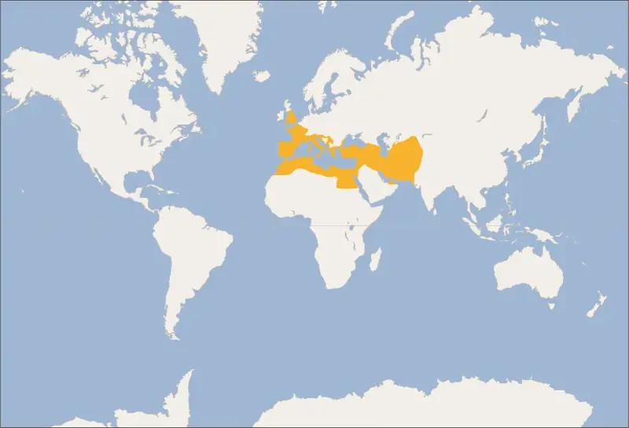
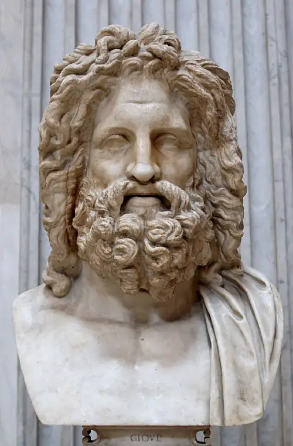
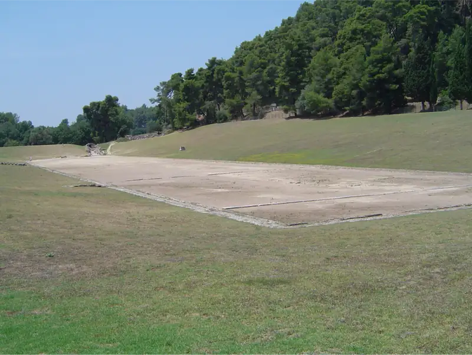
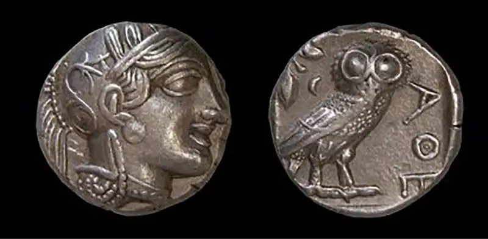
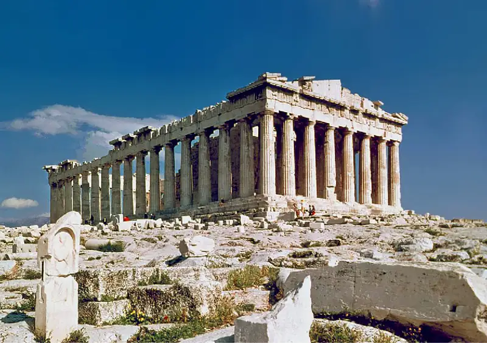
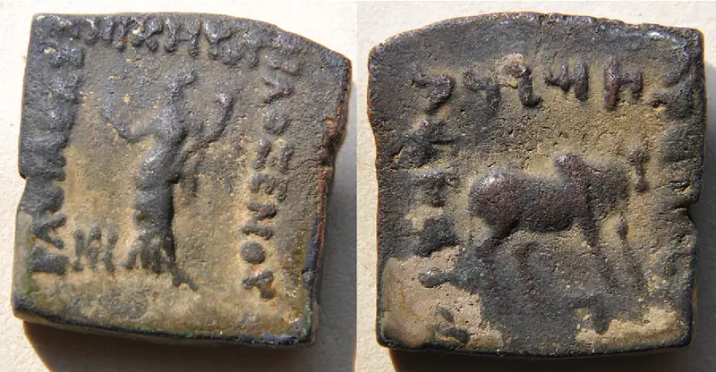
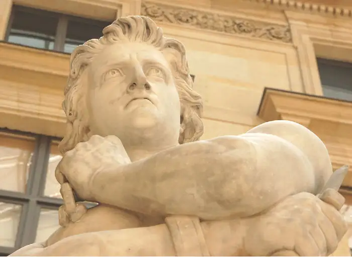
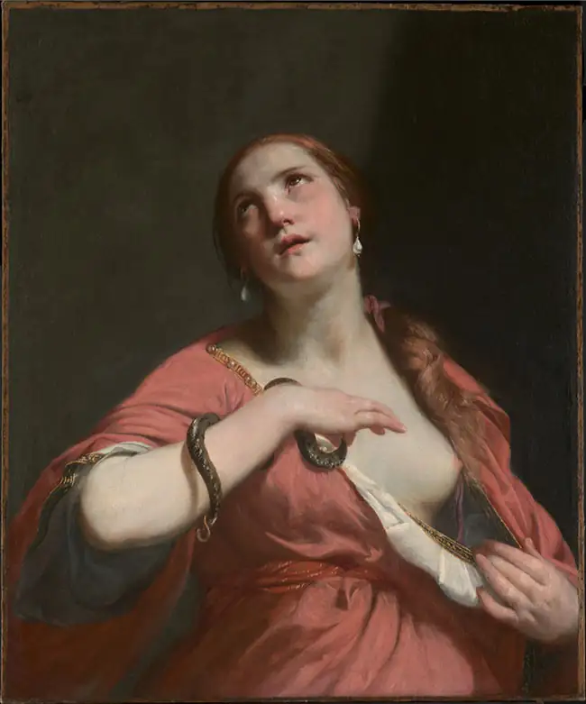

Chapter 6: Mediterranean Peoples¶
Introduction¶
![An image of a painting is shown, partially obscured at the left side and at the bottom with green colors. In the image, a man is shown riding on a brown horse with brown, black, and red reins. The man wears a silver suit of armor with red trim, has brown chin length hair, a large nose, and long sideburns. An image of a face shows in the armor on his chest. He holds a long brown spear. Behind the man a black horse head is seen and a man’s eye under a silver helmet with brown feathers. Black trees are seen in the background and a grayish sky.](img/osx-worldhist-a06-00-alexgreat.webp)
In the first century CE, a wealthy Roman in the southern Italian town of Pompeii decorated his home with an elaborate mosaic portraying the decisive victory of the Macedonians, led by Alexander the Great, over the Persian Empire at the Battle of Issus (in modern Turkey) in 333 BCE (Figure 6.1). Why would a Roman invest in such expensive decoration to commemorate the three hundred–year-old victory of a foreign king in a distant land?
Beginning approximately 3,500 years before our time, the lands that border the Mediterranean Sea became increasingly linked by commerce and cultural interaction. These links culminated in the emergence of the Roman Empire, which had united all these regions by the first century CE. Greek colonists had settled the region of Pompeii some seven hundred years before this mosaic was produced, and Alexander, the hero of the battle, was a champion in Greek culture. With his iconic victory over the Persian “barbarians,” he represented the shared cultural legacy of Greeks and Romans. The history of the ancient Mediterranean world shows how this common culture developed over time.
![A timeline of events from this chapter is shown. 2000 BCE: Rise of Minoan Crete; an image of a brown statue with arms raised wearing a tall hat is shown. 1100 BCE: Phoenician alphabet developed. 776 BCE: Olympic Games begin; a gray statue of a naked man with a round disc in his right hand is shown. 753 BCE: Rome founded. 490 BCE, 480-479 BCE: Persian Wars with Greece; a round black and orange image is shown of two warriors fighting with swords with a shield shown in between with a winged horse displayed. 431 BCE – 404 BCE: Peloponnesian War. 334 BCE: Alexander invades Persia: a partial image of a soldier in armor on a horse is shown. 264 BCE: First Punic War begins; a pastel image is shown of people in long robes and warrior helmets trekking across high mountains on horses and elephants. 44 BCE: Julius Caesar assassinated. 31 BCE: Egypt becomes a Roman province.](img/osx-worldhist-a06-00-timeline.webp)

6.1 Early Mediterranean Peoples¶
Learning Objectives
By the end of this section, you will be able to:
- Identify the regional peoples of the Mediterranean before 500 BCE
- Discuss the technological achievements of the early Mediterranean peoples
- Describe the interconnectedness of the early Mediterranean peoples
During the Bronze Age (c. 3300–1200 BCE), trade connected the peoples and cultures of Greece and the Aegean islands such as Crete. By the third millennium BCE, the inhabitants of these lands were already producing wine and olive oil, products in high demand in ancient Egypt and the Near East. The Aegean Minoan and Mycenaean civilizations of the Late Bronze Age (c. 1600–1100 BCE) thus shared in the economic prosperity and cultural interaction that linked the eastern Mediterranean with the ancient cultures of western Asia.
The eventual collapse of the Late Bronze Age world coincided with the development of new technology that allowed people to devise iron tools and weapons. During the new Iron Age, the Phoenicians not only preserved Bronze Age cultural traditions but they also developed a revolutionary new communication tool, the alphabet, that vastly expanded literacy. They established trading posts across the Mediterranean as far as Spain, often in search of new sources of iron ore and other metals such as tin. The arrival of the Phoenicians and Greek traders in the western Mediterranean brought them into contact with the Etruscans in the Italian peninsula. Thus, the period from the Bronze Age through the Iron Age witnessed the development of numerous cultures across the Mediterranean.
The Late Bronze Age World¶
Egypt was the dominant economic and military power of the Late Bronze Age, for the most part a time of economic prosperity and political stability. Other powerful kingdoms included Minoan Crete, Mycenaean Greece, the Hittites of Asia Minor (modern Turkey), the Mitanni and Assyrians in northern Mesopotamia, and the Kassites and Elamites in southern Mesopotamia and western Iran (Figure 6.4). While each maintained its own unique culture, their interactions created a shared Late Bronze Age culture.
![A map is shown with the Mediterranean Sea labelled in the west, the Black Sea labelled in the north, and the Caspian sea labeled in the northeast. A large part of the map is highlighted orange. Regions labeled within this area include: Mycenaeans, Hittites, Anatolian tribes, Canaan, Caucasic tribes, Hurrians, Kassites, and Elam. An island just south of the Mycenaeans is highlighted purple and labelled “Minoan Civilization.” Other areas highlighted purple are located in a long, thin strip heading south at the southeastern end of the Mediterranean, labelled “Egypt” and two oval areas at the eastern end of the Mediterranean Sea, titles “Syrian City-States” and Mesopotamia.”](img/osx-worldhist-a06-01-m-bronzeag.webp)
For instance, they all used a redistributive economic system in which agricultural goods were collected from local farmers as taxes, stored in the palace or temple, and redistributed to urban artisans, merchants, and officials who could not grow food. They all possessed military forces of elite warriors trained to fight from horse-drawn chariots. They interacted using a common set of diplomatic practices: Official correspondence was often written in Akkadian cuneiform, military alliances were sealed by arranged marriages between the royal families of allied states, and vassal states paid tribute to dominant states to avoid military assault.
These civilizations also exchanged prized goods, such as wine and oil from Greece, cedar logs from the Levant (modern Israel, Jordan, Lebanon, Palestine, and Syria), and copper from the island of Cyprus. Great cultural achievements resulted from their interaction. For example, in the small maritime kingdom of Ugarit (now Syria), scribes modified their writing methods to suit their local Semitic language. They used this script to record traditional epic poetry featuring myths of their main deity, the storm god Baal.
Minoan Crete and Mycenaean Greece¶
By 2000 BCE, a unique culture had developed on the Aegean island of Crete, reaching the height of its power at the beginning of the Late Bronze Age around 1600 BCE. The later Classical Greeks told the myth of King Minos of Crete, who built a giant maze known as the Labyrinth and imprisoned there a half-man, half-bull called the Minotaur (the “Bull of Minos”). To avenge his own son’s death, Minos forced young men and women from Athens in Greece to enter the Labyrinth and be eaten by the monster. Historians see in the myth a distant memory of the earlier civilization on Crete and use the term Minoan, derived from Minos, to describe it.
The Minoans built spacious palaces on Crete, the largest at Knossos. Since these were usually unfortified, historians believe Crete was generally peaceful and united under a single government with Knossos as the capital. The Minoans also established settlements and trading posts on other Aegean islands such as Thera and along the Anatolian coast. Their palaces were huge complexes that served as economic and administrative centers. To keep records for these centers the Minoans developed their own script, written on clay tablets and known to scholars as Linear A. It has not yet been deciphered.
A common weapon and symbol in these palaces was the labrys, or double ax, from which the word “labyrinth” arose. In the courtyards, young men and women participated in bullfights that may be the basis for the myth of the Minotaur. Frescoes on the palace walls depict these fights as well as sea creatures and scenes from nature (Figure 6.5). The Minoan religion revered bulls and a goddess associated with snakes, nature, and fertility. The abundance of figurines of this snake-wielding female deity and other artistic depictions of women may mean that at least some women enjoyed high social status in Minoan society. Religious rituals were practiced in small shrines as well as on mountain tops and in caves and sacred forests.
![An image of a rectangular wall painting is shown. The surface of the wall is stone with flat, round areas protruding out in various locations. The borders are beige, brown, and blue stripes with crescent shapes, with dots, lines and dashes inside the crescents. In the middle of the frame, a large brown and white animal with short legs and horns is stretched across the blue background with its legs splayed out. A dark brown figure in a light brown loincloth is upside down on the middle of the animal with their legs kicking to the right. A figure stands in front and behind the animal. The one in front wears a white short robe and is grasping the animal’s front horn. The figure behind the animal wears a brown loincloth, wrist and arm bangles, and is holding both arms straight out toward the brown figure on the animal’s back.](img/osx-worldhist-a06-01-minoans.webp)
Link to Learning
For a thorough examination of the art and archaeology of the Aegean Bronze Age, visit Dartmouth University’s Aegean Prehistoric Archaeology website.
Sometime around 1500 BCE, the palaces on Crete were destroyed. Knossos was rebuilt, and scribes there began employing a new script scholars call Linear B, apparently derived from Linear A and found to be an early form of Greek. Linear B clay tablets discovered on the Greek mainland led historians to conclude that Greeks from the mainland conquered Crete and rebuilt Knossos.
The Bronze Age culture that produced Linear B is called Mycenaean since the largest Bronze Age city in Greece was at Mycenae. Bronze Age Greeks appear to have migrated from the Balkans into mainland Greece around 2000 BCE and adopted Minoan civilization around the beginning of the Late Bronze Age, in 1600 BCE. Unlike the Minoans, the Mycenaean Greeks were divided into a number of separate kingdoms. Immense palace complexes like those at Knossos have been found at Mycenae, Tiryns, Thebes, Pylos, and Sparta, sometimes surrounded by monumental fortifications. These locations correspond to the powerful kingdoms described in the later Greek epic poem the Iliad, attributed to the poet Homer. This poem tells the story of the Trojan War, in which the Greek kingdoms, led by King Agamemnon of Mycenae, waged war against the city of Troy. Archaeologists have also uncovered the Bronze Age city of Troy in western Turkey, which suggests the Iliad was loosely based on oral traditions that preserved the memory of these ancient Bronze Age kingdoms. The Linear B tablets indicate that the ruler of these palaces was known as the Wanax or “lord,” the same word used to describe the heroic kings of the Iliad.
The Collapse of the Bronze Age World¶
The last century of the Late Bronze Age, after 1200 BCE, was a period of wars and invasions that witnessed the collapse of many powerful states. The palaces of Mycenaean Greece were destroyed, perhaps following revolts by the lower class and natural disasters like climate change and earthquakes. In the centuries that followed, the population declined drastically, writing and literacy disappeared, and Greece entered a “Dark Age.”
Later ancient Greek historians reported that Greek-speaking tribes known as the Dorians migrated from northwest Greece to the south after the Trojan War. The instability in Greece and the Aegean resulted in much migration by people in search of new homes. For instance, ancient Egyptian inscriptions tell us that the “Sea Peoples” destroyed the Hittite Empire and numerous kingdoms in the Levant to the north of Egypt. One particular group known as the Philistines (Peleset), who attacked Egypt, eventually settled just north of Egypt along the coast of the southern Levant. But there were many others, including the Akawasha, Lukka, Shardana, Tursha, and more who washed across the eastern Mediterranean during the Late Bronze Age Collapse (Figure 6.6).
![A map is shown. Black lines are drawn all over. A compass is located in the bottom left corner as well as a scale indicating “300 km.” In the northwest corner of the map a dark pink arrowed line in heading south and labelled “Inland invasions.” Another dark pink arrowed line is shown in the north of the map heading southeast and then splitting into three – one heading east toward a black dot labelled Hattusas, one heading south, and one heading southwest. The last dark pink arrow is seen across the bottom of the map heading from west to east to an area labelled “Nile delta.” A small black arrow points to the “Nile delta” and is labelled “Sea People in the Nile Delta ~ 1188-1177 BCE.” Blue arrowed lines show in the middle of the map and are labelled “Sea people invasions.” The first arrow begins in an area in the middle west of the map by a city labelled Thebes. The arrow heads north a bit then heads northeast to a city labelled Troy. A black arrow points to the city of Troy and is labelled “Destruction of Troy ~ 1190-1180 BCE.” Another blue arrow begins west of Thebes and heads south past a city labelled Pylos and splits into three – one heading south and meeting up with a dark pink arrow across the bottom of the map, one heading north toward a city labelled Mycenae (a black arrow points to Mycenae and is labelled “Destruction of Mycenae ~ 1210-1200 BCE”), and one heading southeast to a city labelled Phaistos, continuing southeast to the Nile delta area. Another blue arrowed line begins just southeast of Mycenae and heads southeast splitting into three directions. The first heads northeast to a city labelled Miletos. The second heads southeast past the cities of Knossos and Phaistos continuing southeast toward the Nile delta. The third blue arrow heads straight east where it splits off into three directions. One head northeast. The second one heads east just south of the city of Tarsus, then just west of the cities of Alalah, Urgarit, Gibala (which is labelled in red with an “” after the name and “1192-1190 BCE”), Byblos, Hazor, Mediggo, Dor, Ashdod, and Ashkelon, and ending right before the “Nile delta.” The third portion of this blue line heads southeast toward the city of Kition and Enkomi then joins with the second blue line of this path just south of Byblos. A black arrow points to the city of Ugarit and is labelled “Destruction of Ugarit ~ 1192-1175 BCE.” The cities of Hazor, Mediggo, Ashdod, and Ashkelon are indicated with a bracket with the label: “Canaan was impacted in ~1185 BCE.” To the west of the city of Kition the city of Paphos is labelled.](img/osx-worldhist-a06-01-m-seapeop.webp)
Other groups were also on the move. Libyans, who inhabited the North African coastal region west of Egypt, invaded the northern Nile River valley and settled there. The attacks of the Sea Peoples and Libyans contributed to the later collapse of Egypt’s central governments after 1100 BCE, ending the New Kingdom period. Phrygians, who inhabited the Balkans in southeast Europe, migrated into Asia Minor (Turkey). The Aramaeans, nomadic tribes who spoke a Semitic language and inhabited the Arabian Desert, migrated into Syria and Mesopotamia.
These wars and invasions coincided with an important technological innovation, the birth of sophisticated iron-making technology. For thousands of years, bronze had been the metal of choice in the ancient world. But the disruptions caused by the Late Bronze Age Collapse made it difficult for metal workers to access tin, a crucial ingredient in bronze. Without a sufficient supply of tin, artisans experimented for centuries with iron ore. In the process, they developed the techniques of steeling (adding carbon to the iron to make it stronger), quenching (rapidly cooling hot iron with water), and tempering (heat treating) to produce a metal far superior in strength to bronze. By around 900 BCE, the Iron Age had begun in the eastern Mediterranean.
Phoenicians, Greeks, and Etruscans¶
The Phoenicians were descended from the Bronze Age Canaanites and lived in cities like Sidon and Tyre (in today’s Lebanon), each ruled by a king. They were great sailors, explorers, and traders who established trading posts in Cyprus, North Africa, Sicily, Sardinia, and Spain. They sailed along the west coast of Africa and to the British Isles in search of new markets and goods such as tin (See Figure 6.7).
![A map is shown with land highlighted beige and water highlighted with blue. A blue area is located in the middle with an oval section in the northeast of the map as well as in the northwest. A small, long thin area of blue is located in the southeast of the map. Black dots litter the coast of the land surrounding the middle body of water indicating “Phoenician colonies.” The cities labelled on these black dots, from west to east are: Gades, Carthage, Utica, Panormus, Leptis Magna, and Kition. Red stars are located on the eastern coast of the middle body of water and are labelled: Arvad, Gebal, Sydon, and Tyre indicating “Phoenician cities.”](img/osx-worldhist-a06-01-m-phoencol.webp)
Around 1100 BCE, the Phoenicians also invented the world’s first known alphabet, using symbols that represented consonant sounds. Strung together, these consonants created words in which vowel sounds were interpreted by the order of the consonants. Because the Phoenician alphabet simplified the earlier script of the Canaanites, more people could now become literate, not just a small, specialized group of scribes. The Phoenicians’ commercial success was undoubtedly partly a result of their better, more efficient record-keeping system that a larger population could learn and employ. Other cultures like the Aramaean peoples and the Israelites quickly adapted the new script to their own languages. By the eighth century BCE, the Greeks had also adopted and later adapted the Phoenician alphabet to write their language.
Beginning with the Assyrian Empire’s expansion in the eighth century BCE, the Phoenician kingdoms became subjects of the successive Iron Age empires of western Asia: the Assyrians, the Chaldeans (Neo-Babylonian), and the Persians. The Phoenicians continued to flourish, however. The Assyrians valued Phoenician artists, and finely crafted Phoenician wares such as jewelry and furniture became popular among the ruling elites. The Persians relied largely on Phoenician sailors and ships to serve as the naval forces, especially in their campaigns to conquer Greece in the early fifth century BCE. When Phoenician city-states such as Sidon and Tyre became subject to foreign rule, many Phoenicians immigrated to the city of Carthage (in modern-day Tunisia), founded by Phoenician merchants around 700 BCE as a stopping place on the long but profitable voyage to Spain. Given this influx of immigrants, Carthage grew large and wealthy, and by the fifth century BCE the southern Italian peninsula was the dominant power in the western Mediterranean.
The Phoenicians were not the only people establishing colonial outposts around the wider Mediterranean world. Beginning in the eighth century, Greeks began founding colonies in North Africa, in coastal Spain and France, on the shores of the Black Sea, and on the Italian peninsula. Many of these colonies were built in resource-rich areas and commonly produced grain, tin, or timber for export back to Greece. Others served more mercantile interests, trading with major and minor powers across the Mediterranean. It was through these colonial ventures that Greeks and Phoenicians came into contact with the Etruscans of the northern Italian peninsula.
The Etruscans were organized into independent city-states such as Veii and Vulci, much like the Greeks were, and each city was ruled by its own king and council of elders. In their art and architecture, the Etruscans followed Greek models (Figure 6.8). They modified the alphabet the Greeks had acquired from the Phoenicians to write their language, which scholars have not yet fully deciphered. By 600 BCE, they had expanded beyond their base in modern Tuscany and colonized Rome, which became an Etruscan city. They also founded new colonies in northern and southern Italy. The Etruscan states remained the dominant power in the Italian peninsula until 474 BCE. In that year, at the Battle of Cumae off the coast of southern Italy, the naval forces of the Greek city-state of Syracuse won a decisive victory over the Etruscan fleet and emerged as the chief power in the region, along with Carthage.
![An image of a beige stoneware shell sitting upright is shown with red, black, and orange colors inside, with raised decorations. Inside the middle bottom of the shell is a carving of a head with almond shaped eyes, a large nose, and full lips. Wavy hair is seen at the forehead under a domed hat with etchings on the front. Large earrings depicted as a bunch of grapes show at the sides of the head. A reddish collar is seen around the neck. The background is light blue and the shell casts a shadow to the right.](img/osx-worldhist-a06-01-etruria.webp)
Since ancient Rome began as an Etruscan city-state, the Etruscans strongly influenced the development of Roman culture. For example, Roman priests divined the will of the gods by examining a sacrificed animal’s entrails, a custom adopted from the Etruscans. The Etruscans honored their dead with elaborate tombs, and the Romans did the same, maintaining that the spirits of their ancestors watched over them. Gladiatorial contests in Rome had origins among the Etruscans, who at funerals forced prisoners of war to fight to the death as human sacrifices to their dead. The fasces, a bundle of rods and an ax that symbolized the authority of Roman magistrates, originally denoted the authority of Etruscan kings. Finally, the Roman alphabet, still used in western and central Europe today, was based on Etruscan modifications to the Greek alphabet.
6.2 Ancient Greece¶
Learning Objectives
By the end of this section, you will be able to:
- Identify the historical factors that shaped the development of the Greek city-state
- Describe the evolution of the political, economic, and social systems of Athens and Sparta
- Discuss the alliances and hostilities among the Greek city-states during the Classical period
- Identify the major accomplishments of Ancient Greek philosophy, literature, and art
In the centuries following the collapse of the Bronze Age Mycenaean kingdoms around 1100 BCE, a dynamic new culture evolved in Iron Age Greece and the Aegean region. During this period, the Greek city-states developed innovative consensual governments. Free adult males participated in their own governance and voted to create laws and impose taxes. This system of government contrasted with the earlier monarchies of the ancient Near East, in which rulers claimed to govern their subjects through the will of the gods.
The degree of political participation in the Greek city-states varied from monarchy and oligarchy, or government by a small group of wealthy elites, to democracy, literally “rule by the people,” a broader-based participation that eventually included both rich and poor adult males. These systems influenced Ancient Roman and European political thought through the centuries. The Greek Classical period (500–323 BCE) witnessed constant warfare among rival city-states, yet it was marked by the creation of enduring works of literature and art that inspired centuries of European artists and writers. Greek philosophers also subjected the human condition and the natural world to rational analysis, rejecting traditional beliefs and sacred myths.
Archaic Greece¶
The Greek Dark Ages (1100–800 BCE) persisted after the collapse of the Mycenaean civilization but began to recede around 800 BCE. From this point and for the next few centuries, Greece experienced a revival in which a unique and vibrant culture emerged and evolved into what we recognize today as Classical Greek civilization. This era, from 800 to 500 BCE, is called Archaic Greece after arche, Greek for “beginning.”
The Greek renaissance was marked by rapid population growth and the organization of valleys and islands into independent city-states, each known as a polis (Greek for city-state). Towns arose around a hill fortress or acropolis to which inhabitants could flee in times of danger. Each polis had its own government and religious cults, and each built monumental temples for the gods, such as the temple of Hera, wife of Zeus and protector of marriage and the home, at the city-state of Argos. Though politically disunited, the Greeks, who began to refer to themselves as Hellenes after the mythical king Hellen, did share a common language and religion. The most famous of their sacred sites were Delphi, near Mount Parnassus in central Greece and seat of the oracle of Apollo, the god of prophecy, and Olympia in southern Greece, sacred to Zeus, who ruled the pantheon of gods at Mount Olympus (Figure 6.9). Beginning in 776 BCE, according to Aristotle, Greeks traveled to Olympia every four years to compete in athletic contests in Zeus’s honor, the origin of the Olympic Games.

Link to the Past: The Olympic Games
Postponed a year because of the COVID-19 pandemic, the 2021 Games of the XXXII Olympiad in Japan included more than three hundred events in thirty-three sports, including new entries like skateboarding, rock climbing, and surfing. Modern games have been held since 1896, when the new International Olympic Committee started the tradition, but as the name suggests, the inspiration came from Ancient Greece.
Athletic events in Ancient Greece were important displays of strength and endurance. There were contests at the sanctuaries at Delphi and Nemea (near Argos), but none was as renowned as the Olympic Games, held at the sanctuary in Olympia that was dedicated to Zeus. Contestants came from all over the Greek world, including Sicily and southern Italy.
Unlike the skateboarding and surfing of modern games, the ancient games focused on skills necessary for war: running, jumping, throwing, and wrestling. Over time, sports that included horses, like chariot racing, were also incorporated. Such events were referenced in Homer’s Iliad, when the hero Achilles held athletic contests to honor his fallen comrade Patroclus and awarded prizes or athla (from which the word “athlete” is derived). The centerpiece of the ancient games was the two-hundred-yard sprint, or stadion, from which comes the modern word “stadium” (Figure 6.10).

Unlike the modern games, where attendees pay great sums to watch athletes compete, admission to the ancient games was free—for men. Women were forbidden from watching and, if they dared to attend, could pay with their lives. Competitors were likely locals with proven abilities, though over time professional athletes came to dominate the sport. They could earn a good living from prizes and other rewards gained through their talent and celebrity, and their statues adorned the sanctuary at Olympia. The poet Pindar in the early fifth century BCE was renowned for composing songs to honor them when they returned home as victors. The Olympic Games continued to be celebrated until 393 CE, when they were halted during the reign of the Christian Roman emperor Theodosius.
- Why might the organizers of the modern Olympic Games have named their contest after the ancient Greek version?
- How are the ancient games similar to the modern Olympic Games? How are they different?
The start of the Archaic period also witnessed the reemergence of specialization in Greek society. Greek artists became more sophisticated and skilled in their work. They often copied artistic styles from Egypt and Phoenicia, where Greek merchants were engaging in long-distance trade. At the site of Al-Mina, along the Mediterranean coast in Syria where historians believe the Phoenician alphabet was first transmitted to the Greeks, Greek and Phoenician merchants exchanged goods. Far to the west, on the island of Ischia off the west coast of Italy, Greeks were competing with Phoenician merchants for trade with local peoples, whose iron ore was in strong demand. Thanks to their contact and trade with the Phoenicians, Greeks adapted the Phoenician alphabet to their own language, making an important innovation by adding vowels (a, e, i, o, u). The eighth century BCE thus witnessed the return of literacy and the end of the Aegean world’s relative isolation after the interlude of the Greek Dark Ages.
The eighth century BCE was also the period in which the epic poems the Iliad and the Odyssey were composed, traditionally attributed to the blind poet Homer. While historians debate whether Homer was a historical or a legendary figure, they agree the epics originated in the songs of oral poets in the Greek Dark Ages. In the eighth century BCE, using the Greek alphabet, scribes wrote these stories down for the first time.
As the population expanded during the Archaic period, a shortage of farmland brought dramatic changes. Many Greeks in search of land to farm left their homes and founded colonies along the shores of the Black Sea and the northern Aegean, in North Africa at Cyrene in Libya, and in southern Gaul (modern France) at Massalia (Marseille). The largest number were on the island of Sicily and in southern Italy, the region the Greeks referred to as Magna Graecia or “Greater Greece.” When Greeks established a colony, it became an independent polis with its own laws. The free adult males of the community divided the colony’s land into equal lots. Thus, a new idea developed in the colonies that citizenship in a community was associated with equality and participation in the governing of the state.
In the society of Archaic Greece, the elite landowners, or aristoi, traditionally controlled the government and the priesthoods in the city-states. But thanks to the new ideas from the colonies, the common people, or kakoi, began demanding land and a voice in the governing of the polis. They were able to gain leverage in these negotiations because city-states needed troops in their wars for control of farmland. The nobility relied on the wealthier commoners, who could afford to equip themselves with iron weapons and armor. In some city-states, the aristoi and the kakoi were not able to resolve their differences peaceably. In such cases, a man who had strong popular support in the city would seize power and rule over the city. The Greeks referred to such populist leaders as tyrants.
In the sixth century BCE, the difficulties caused by the land shortage were relieved by the invention of coinage. A century before, adopting a practice of the kings of Lydia in western Asia Minor (Turkey), Athens stamped silver pieces with the image of an owl, a symbol of wisdom often associated with the goddess Athena (See Figure 6.11). Instead of weighing precious metals to use as currency or arguing over the value of bartered goods to trade, merchants could use coins as a simple medium of exchange. The agora, or place of assembly in each city-state, thus became a marketplace to buy and sell goods. In the sixth century BCE, this rise of a market economy stimulated economic growth as farmers, artisans, and merchants discovered stronger incentives to produce and procure more goods for profit. For example, farmers learned how to produce more food with the land they already possessed rather than always seeking more land. The economic growth of this period is reflected in the many new temples the Greek city-states constructed then.

Sparta and Athens¶
In the Archaic period, Athens and Sparta emerged as two of the most important of the many Greek city-states. Not only did their governments and cultures dominate the Greek world in the subsequent Classical period; they also fired the imaginations of Western cultures for centuries to come. Athens was the birthplace of democracy, whereas Sparta was an oligarchy headed by two kings.
The Rise and Organization of Sparta¶
Sparta in the eighth century BCE was a collection of five villages in Laconia, a mountain valley in the Peloponnese in southern Greece. Due to the shortage of farmland, the citizens (adult males) of these villages, the Spartiates, all served in the military and waged war on neighboring towns, forcing them to pay tribute. The Spartiates also appropriated farmland for themselves and enslaved the inhabitants of these lands, most famously the Messenians, who became known as the helots. Just as Greek colonists at this time divided land among themselves into equal lots, the Spartiates likewise divided the conquered land equally and assigned to each landowner a certain number of helot families to work it. Helots, unlike enslaved people in other parts of Greece, could not be bought or sold but remained on the land as forced laborers from generation to generation. In the seventh century BCE, Sparta conquered the land of Messene to its west and divided its farmland equally among the Spartiates.
By the late sixth century BCE, the wealth from the rich agricultural land that Sparta then controlled had made it the most powerful state in the Peloponnese. Sparta also organized the city-states of this region and parts beyond into a system of alliances that historians refer to as the Peloponnesian League. Its members still had self-government and paid no tribute to Sparta, but all were expected to have the same friends and enemies as Sparta, which maintained its dominance in the league. Sparta also used its army to overthrow tyrants in the Peloponnesian city-states and restore political power to the aristoi.
The Spartans were proud of their unique system of government, or constitution, which was a set of laws and traditional political practices rather than a single document. It was said to have been created by a great lawgiver named Lycurgus around 800 BCE, but modern historians view its development as an evolutionary process during the Archaic period rather than the work of a single person.
Sparta had two hereditary kings drawn from rival royal families. Their powers were very limited, though both sat as permanent members of the Council of Elders and were priests in the state religion. On occasion, the Spartan kings also led armies into battle. The Assembly of Spartiates passed all laws and approved all treaties with the advice of the Council of Elders. This Assembly also elected five judges every year who administered the affairs of state, as well as the members of the Council of Elders.
The unique element of Spartan culture was the agoge, its educational system. At the age of seven, boys were separated from their families and raised by the state. To teach them to live by their wits and courage, they were fed very little so they had to learn how to steal food to survive. At the age of twelve they began an even more severe regimen. They were not allowed clothes except a cloak in the wintertime, and they bathed just once a year (Figure 6.12). They also underwent ritual beatings intended to make them physically strong and hardened warriors. At the age of eighteen, young men began two years of intense military training. At the age of twenty, a young Spartan man’s education was complete.
![An image of a painting is shown. The forefront of the image has a group of four girls, naked except for waistcloths in black and blue with red and yellow belts standing on a field of green grass. They have brownish hair in ponytails and buns. They face to the right, one with her arm outstretched. At the right, a group of four completely naked boys stand, while one is on all fours on the ground, all looking at the girls. They have short black, brown, and blond hair and one has his arms above his head. A pile of cloths lay at his feet. In the middle background nine people stand in colorful dresses and cloths with two white small four-legged animals by their sides. No facial details are shown. Behind them a brown road runs the length of the painting and a blurry city can be seen in the far right in pale brown and white colors. A large, tall cream-colored mountain is seen in the far left of the image and the sky is a hazy beige with blue undertones.](img/osx-worldhist-a06-02-spartayouth.webp)
Women of the Spartiate class, before marrying in their mid-teens, also practiced a strict physical regimen, since they were expected to be as strong as their male relatives and husbands and even participate in defending the homeland. Spartan women enjoyed a reputation for independence, since they managed the farms while men were constantly training for or at war and often ran their family estates alone due to the early deaths of their soldier husbands. The state organized unmarried women into teams known as chorai (from which the term chorus is derived) that danced and sang at religious festivals.
When a Spartiate man reached the age of thirty, he could marry, vote in the Assembly, and serve as a judge. Each Spartiate remained in the army reserve until the age of sixty, when he could finally retire from military service and became eligible for election to the Council of Elders. Spartan citizens were proud to devote their time to the service of the state in the military and government; they did not have to work the land or learn a trade since this work was done for them by commoners and helot subjects.
The Rise and Organization of Athens¶
Athens, like Sparta, developed its own system of government in the Archaic period. Uniquely large among Greek city-states, Athens had long enclosed all the land of Attica, which included several mountain valleys. It was able to eventually develop into a militarily powerful democratic state in which all adult male citizens could participate in government, though “citizenship” was a restricted concept, and because only males could participate, it was by nature a limited democracy.
The roots of Athenian democracy are long and deep, however, and its democratic institutions evolved over centuries before reaching their fullest expression in the fifth century BCE. It was likely the growing prosperity of Athenians in the eighth century that had set Athens on this path. As more families became prosperous, they demanded greater say in the functioning of the city-state. By the seventh century BCE, Athens had an assembly allowing citizens (free adult males) to gather and discuss the affairs of the state. However, as the rising prosperity of Athenians stalled and economic hardship loomed by the end of the century, the durability of the fledgling democracy seemed in doubt. Attempts to solve the economic problems by adjusting the legal code, most notably by the legislator Draco (from whose name we get the modern term “draconian”), had little effect, though codifying the law in written form brought more clarity to the legal system.
With the once-thriving middle class slipping into bankruptcy and sometimes slavery, civil war seemed inevitable. Disaster was avoided only with the appointment of Solon in 594 BCE to restore order. Solon came from a wealthy elite family, but he made it known that he would draft laws to benefit all Athenians, rich and poor. A poet, he used his songs to convey his ideas for these new laws (Figure 6.13).
![An image of a brightly colored painting is seen. In the image, a barefoot fair-skinned man is dressed in a bright red robe with his right shoulder exposed. He has dark hair and a full beard and is bright eyed. A thin gold headband runs across his head. He sits on a large stone seat that is chipped at the bottom and has the carving of a feathered bird in a circle at the right. The letters “OHN” are seen on the seat, partially obscured by his cloak. His head rests in his left hand, arm bent at the elbow and his right arm is stretched out holding a large brown rectangular plank with a white scroll hanging on both sides. He holds a gold writing implement in his right hand as well. The background shows large pale gray and blue mountains and a cloudy blue sky.](img/osx-worldhist-a06-02-solon.webp)
One of Solon’s first measures was to declare that all debts Athenians owed one another were forgiven. Solon also made it law that no Athenian could be sold into slavery for failure to repay a loan. These decrees did much to provide relief to farmers struggling with debt who could now return to work the land. Under Solon’s new laws, each of Athens’s four traditional tribes chose one hundred of its members by lot, including commoners, to sit in the new Council of Four Hundred and run the government. There were still magistrates, but now Solon created the jury courts. All Athenians could appeal the ruling of a magistrate in court and have their cases heard by a jury of fellow citizens. Solon also set up a hierarchal system in which citizens were eligible for positions in government based on wealth instead of hereditary privilege. Wealth was measured by the amount of grain and olive oil a citizen’s land could produce. Only the wealthiest could serve as a magistrate, sit on the Council, and attend the Assembly and jury courts. Citizens with less wealth could participate in all these activities but could not serve as magistrates. The poorest could only attend the Assembly and the jury courts.
Solon’s reforms were not enough to end civil unrest, however. By 545 BCE, a relative of his named Pisistratus had seized power by force with his own private army and ruled as a tyrant with broad popular support. Pisistratus was reportedly a benevolent despot and very popular. He kept Solon’s reforms largely in place, and Athenians became accustomed to serving in Solon’s Council and in jury courts. They were actively engaged in self-government, thus setting the stage for the establishment of democracy. Pisistratus also encouraged the celebration of religious festivals and cults that united the people of Attica through a common religion. To further help the farmers Solon brought back, Pisistratus redistributed land so they could once again make a living.
After Pisistratus’s death, his sons tried to carry on as tyrants, but they lacked their father’s popularity. Around 509 BCE, an Athenian aristocrat named Cleisthenes persuaded the Spartans to intervene in Athens and overthrow these tyrants. The Spartans, however, set up a government of elites in Athens that did not include Cleisthenes. Consequently, he appealed to the common people living in the villages, or demes, to reject this pro-Spartan regime and establish a “democracy.” His appeal was successful, and Cleisthenes implemented reforms to Solon’s system of government. He replaced the Council of Four Hundred with one of five hundred and reorganized the Athenians into ten new tribes, including in each one villages from different parts of Attica. Every year, each tribe chose fifty members by lot to sit in the new Council. This reform served to unite the Athenians, since each tribe consisted of people from different parts of Attica who now had to work together politically. Each tribe’s delegation of fifty also served as presidents for part of the year and ran the day-to-day operation of the government.
By the end of the Archaic period, Athens had developed a functioning direct democracy, which differs from modern republics in which citizens vote for representatives who sit in the legislature. All citizens could sit in the Athenian Assembly, which then was required to meet at least ten times a year. All laws had to be approved by the Assembly. Only the Assembly could declare war and approve treaties. Athens had a citizen body of thirty to forty thousand adult males in the Classical period, but only six thousand needed to convene for meetings of the Assembly. Citizens could also be chosen by lot to sit in the Council. Since they were permitted to serve for just two one-year terms over a lifetime, many Athenians had the opportunity to participate in the executive branch of government. All citizens also served on juries, which not only determined the guilt or innocence of the accused but also interpreted the way the law was applied. Women, enslaved people, and foreign residents could not participate. However, women of the citizen class were prominent in the public religious life of the city, serving as priestesses and in ceremonial roles in religious festivals.
Classical Greece¶
The Greek Classical period (500–323 BCE) was an era of great cultural achievement in which enduring art, literature, and schools of philosophy were created. It began with the Greek city-states uniting temporarily to face an invasion by the mighty Persian Empire, but it ended with them locked in recurring conflicts and ultimately losing their independence, first to Persia and later to Macedon.
The Persian Wars¶
The Persian Wars (492–449 BCE) were a struggle between the Greek city-states and the expanding Persian Empire. In the mid-sixth century BCE, during the reign of Cyrus the Great, Persian armies subdued the Greek city-states of Ionia, located across the Aegean from Greece in western Asia Minor (Turkey) (Figure 6.14). To govern the cities, the Persians installed tyrants recruited from the local Greek population. The resident Greeks were unhappy with the tyrants’ rule, and in 499 BCE they rose in the Ionian Rebellion, joined by Athens and the Greek cities on the island of Cyprus. But by 494 BCE Persian forces had crushed the rebellions in both Ionia and Cyprus. For intervening in Persian affairs, the Persian king Darius decided that Athens must be punished.
![A map is shown with land highlighted beige and water highlighted blue. Blue lines run throughout the lands. The Black Sea and the Caspian Sea are labelled in the north, the Mediterranean Sea is labelled in the west, and the Red Sea, the Persian Gulf and the Arabian Sea are labelled in the south. The Nile River and the Suez Canal are labelled at the southeast of the Mediterranean and the Tigris River. and the Euphrates River are labelled northwest of the Persian Gulf. The Amu Darya is labelled to the east of the Caspian Sea. The Indus River the Chenab River the Sudej River and the Helmand River are labelled in the east of the map. The country of Libya is labelled in the southwest of the map and the country of Arabia is labelled in the south middle of the map. A large area from the west of the Black Sea, down to the northern portion of Libya, east to the end of the map is highlighted pink. Athens is labeled outside of the highlighted portion in the west. A small eastern region inside the highlighted portion is highlighted yellow and labeled Ionia.](img/osx-worldhist-a06-02-m-persian.webp)
In 490 BCE, Darius assembled a large fleet and army to cross the Aegean from Asia Minor, planning to subdue Athens and install one of Pisistratus’s sons as tyrant there. These Persian forces landed at Marathon on the west coast of Attica. They vastly outnumbered the Athenians but were drafted subjects with little motivation to fight and die. The Athenian soldiers, in contrast, were highly motivated to defend their democracy. The Persians could not withstand the Athenians’ spirited charge in the Battle of Marathon and were forced back onto their ships. Leaving the battle, the Persians then sailed around Attica to Athens. The soldiers at Marathon raced by land across the peninsula to guard the city. Seeing the city defended, the Persians returned to Asia Minor in defeat.
In 480 BCE, Xerxes, the son and successor of Darius, launched his own invasion of Greece intended to avenge this defeat and subdue all the Greek city-states. He assembled an even larger fleet as well as an army that would invade by land from the north. At this time of crisis, most of the Greek city-states decided to unite as allies and formed what is commonly called the Hellenic League. Sparta commanded the armies and Athens the fleet. A small band of the larger land forces, mostly Spartans, decided to make a stand at Thermopylae, a narrow pass between the mountains and the sea in northeastern Greece. Their goal was not to defeat the invading Persian army, which vastly outnumbered them, but to delay them so the rest of the forces could organize a defense. For days the small Spartan force, led by their king Leonidas, successfully drove back a vastly superior Persian army, until a Greek traitor informed the Persians of another mountain pass that enabled them to circle around and surround the Spartans. The Spartan force fought to the death, inspiring the Greeks to continue the fight and hold the Hellenic League together.
After the Battle of Thermopylae, the Persian forces advanced against Athens. The Athenians abandoned their city and withdrew to the nearby island of Salamis, where they put their faith in their fleet to protect them. At the naval Battle of Salamis, the allied Greek fleet led by Athens destroyed the Persian ships. Xerxes then decided to withdraw much of his force from Greece, since he no longer had a fleet to keep it supplied.
In 479 BCE, the reduced Persian force had retreated from Athens to the plains of Boeotia, just north of Attica. The Greek allied forces under the command of Sparta advanced into Boeotia and met the Persian army at the Battle of Plataea. The Persian forces, mostly unwilling draftees, were no match for the Spartan troops, and the battle ended in the death or capture of most of the Persian army.
The Athenian Empire and the Peloponnesian War¶
After the Persian Wars, the Athenians took the lead in continuing the fight against Persia and liberating all Greek city-states. In 477 BCE, they organized an alliance of Greek city-states known today as the Delian League, headquartered on the Aegean island of Delos. Members could provide ships and troops for the league or simply pay Athens to equip the fleet, which most chose to do. Over the next several decades, allied forces of the Delian League liberated the Greek city-states of Ionia from Persian rule and supported rebellions against Persia in Cyprus and Egypt. Around 449 BCE, Athens and Persia reached a peace settlement in which the Persians recognized the independence of Ionia and the Athenians agreed to stop aiding rebels in the Persian Empire.
Over the course of this war, the money from the Delian League enriched many lower-class Athenians, who found employment as rowers in the fleet. Athens even began paying jurors in jury courts and people who attended meetings of the Assembly. Over time it became clear to the other Greeks that the Delian League was no longer an alliance but an empire in which the subject city-states paid a steady flow of tribute. In 465 BCE, the city-state of Thasos withdrew from the league but was compelled by Athenian forces to rejoin. Around 437 BCE, the Athenians began using tribute to rebuild the temples on the Acropolis that the Persians had destroyed. Including the Parthenon, dedicated to Athena Parthenos, these were some of the most beautiful temples ever built and the pride of Athens, but to the subject city-states they came to symbolize Athenians’ despotism and arrogance (See Figure 6.15).

The wealth and power of Athens greatly concerned the Spartans, who saw themselves as the greatest and noblest of the Greeks. The rivalry between the two city-states eventually led them into open conflict. In 433 BCE, the Athenians assisted the city-state of Corcyra in its war against Corinth. Corinth was a member of the Peloponnesian League and requested that Sparta, the leader of this league, take action against Athenian aggression. Thus, in 431 BCE, the Peloponnesian War began with the invasion of Attica by Sparta and its allies (See Figure 6.16).
![A map titled “Peloponnesian War Alliances, 431 BCE”. The Aegean Sea is labelled in the middle of the map with the Persian Empire labelled to the east. Most of the coast of the Aegean Sea, including Ionia, Hellespont, Attica, and Athens, is highlighted green indicating Athens and allies. Corfu in the north west is also highlighted green. Most of an island, including Peloponnese, Corinth, and Sparta, in addition to Thebes, is highlighted purple, indicating Sparta and allies. Two small regions south of Corfu are also highlighted purple.](img/osx-worldhist-a06-02-m-peloponn.webp)
The political leader Pericles persuaded his fellow Athenians to withdraw from the countryside of Attica and move within the walls of Athens, reasoning that the navy would provide them food and supplies and the wall would keep them safe until Sparta tired of war and sought peace. Pericles’s assessment proved correct. In 421 BCE, after ten years of war, the Spartans and Athenians agreed to the Peace of Nicias, which kept the Athenian empire intact. The cost of the war for Athens was high, however. Due to the crowding of people within its walls, a plague had erupted in the city in 426 BCE and killed many, including Pericles.
Link to Learning
We know of the 426 BCE plague in Athens from the writings of Thucydides, the ancient chronicler and historian of the Peloponnesian War. But what was the mysterious illness? And how did it affect Athenian society and politics? Take a look at this article about the plague in Athens from The National Geographic for some modern answers.
Several years later, arguing that the empire could thrive only by expanding, an ambitious young Athenian politician named Alcibiades (a kinsman of Pericles) inspired a massive invasion of Sicily targeting Syracuse, the island’s largest city-state. Just as the campaign began in 415 BCE, Alcibiades’s political enemies in Athens accused him of impiety and treason, and he fled to Sparta to avoid a trial. Without his leadership, the expedition against Syracuse floundered, and in 413 BCE the entire Athenian force was destroyed. In exile, Alcibiades convinced the Spartans to invade Attica again, now that Athens had been weakened by the disaster in Syracuse. In the years that followed, the Spartans realized they needed a large fleet to defeat Athens, and they secured funds for it from Persia on the condition that Sparta restore the Greek cities in Ionia to Persian rule. In 405 BCE, the new Spartan fleet destroyed the Athenian navy at the Battle of Aegospotami in the Hellespont. The Athenians, under siege, could not secure food or supplies without ships, and in 404 BCE the city surrendered to Sparta. The Peloponnesian War ended with the fall of the city and the collapse of the Athenian empire.
The conclusion of the Peloponnesian War initially left Sparta dominant in Greece. Immediately following the war, Sparta established oligarchies of local aristocrats in the city-states that had been democracies under the Delian League. And it set up the Era of the Thirty Tyrants, a brief rule of oligarchs in Athens. With regard to Persia, Sparta reneged on its promise to restore the Greek city-states in Ionia to Persian control. Persia responded by funding Greek resistance to Sparta, which eventually compelled Sparta to accept Persia’s terms in exchange for Persian support. This meant turning over the Ionian city-states as it had previously promised.
Now with Persian backing, the Spartans continued to interfere in the affairs of other Greek city-states. This angered city-states like Thebes and Athens. In 371 BCE, the Thebans defeated the Spartans at the Battle of Leuctra in Boeotia. The next year they invaded the Peloponnese and liberated Messene from Spartan rule, depriving the Spartans of most of their helot labor there. Without the helots, the Spartans could not support their military system as before, and their Peloponnesian League collapsed. Alarmed by the sudden growth of Thebes’s power, Athens and Sparta again joined forces and, in 362 BCE, fought the Thebans at the Battle of Mantinea. The battle was inconclusive, but Thebes’s dominance soon faded. By 350 BCE, the Greek city-states were exhausted economically and politically after decades of constant warfare.
The Classical “Golden Age”¶
Many historians view the Greek Classical period and the cultural achievements in Athens in particular as a “Golden Age” of art, literature, and philosophy. Some scholars argue that this period saw the birth of science and philosophy because for the first time people critically examined the natural world and subjected religious beliefs to reason. (Other modern historians argue that this position discounts the accomplishments in medicine and mathematics of ancient Egypt and Mesopotamia.) For example, around 480 BCE, Empedocles speculated that the universe was not created by gods but instead was the result of the four material “elements”—air, water, fire, earth—being subjected to the forces of attraction and repulsion. Another philosopher and scientist of the era, Democritus, maintained that the universe consisted of tiny particles he called “atoms” that came together randomly in a vortex to form the universe.
Philosophers questioned not only the traditional views of the gods but also traditional values. Some of this questioning came from the sophists (“wise ones”) of Athens, those with a reputation for learning, wisdom, and skillful deployment of rhetoric. Sophists emerged as an important presence in the democratic world of Athens beginning in the mid-fourth century BCE. They claimed to be able to teach anyone rhetoric, or the art of persuasion, for a fee, as a means to achieve success as a lawyer or a politician. While many ambitious men sought the services of sophists, others worried that speakers thus trained could lead the people to act against their own self-interest.
Many thought Socrates was one of the sophists. A stonecutter by trade, Socrates publicly questioned sophists and politicians about good and evil, right and wrong. He wanted to base values on reason instead of on unchallenged traditional beliefs. His questioning often embarrassed powerful people in Athens and made enemies, while his disciples included the politician Alcibiades and even some who had opposed Athenian democracy. In 399 BCE, an Athenian jury court found Socrates guilty of impiety and corrupting the youth, and he was sentenced to death (Figure 6.17).
![An image of a dark painting is shown. In the painting, a large bed is shown in the middle with a wooden frame and light brown bedsheets. In the middle of the bed a man sits upright with his naked body covered with an off-white cloth, exposing his bare chest and bare feet. His left foot rests on a wood block at the side of the bed and his right leg extends out on the bed. He has white curly hair and a dirty brown long beard. His left arm is raised with the pointer finger pointing up. His right arm reaches out toward a gold goblet being held up by a fair skinned man in a short red cloth around his waist and falling off his shoulders standing to the left of the seated man. He is barefoot, has short curly brown hair, and faces away from the man on the bed and holds his head in his left hand. At the foot of the bed a man in gray robes sits in a chair with his head hanging down, his mouth and chin covered with his clothing. He has short gray hair and sideburns show on the side of his face. His hands are laid over each other in his lap. Behind him a man in blue and brown robes stands with his arms raised and face buried in the stone wall of an archway. Behind him in the adjacent room a staircase can be seen in the dark with three figures ascending the staircase in long robes. To the right of the man on the bed, a man is seated on a stone step-like chair wearing long rust-colored robes with brown curly hair and beard looking at the man on the bed. His right hand rests on the leg of the man on the bed. To the right of the bed, five figures stand in various colored robes, two looking at the man on the bed, while the other three show anguish by throwing their hands up in the air, hold their head in their hands, and on the sides of their head. The background is a very dark room with a stone wall and stone floor. A paper scroll is seen on the floor at the foot of the bed and a chain with a handcuff is seen at the side of the bed.](img/osx-worldhist-a06-02-deadsoc.webp)
Socrates left behind no writings of his own, but some of his disciples wrote about him. One of these was Plato, who wrote dialogues from 399 BCE to his death in 347 BCE that featured Socrates in conversation with others. Through these dialogues, Plato constructed a philosophical system that included the study of nature (physics), of the human mind (psychology and epistemology, the theory of knowledge), and ethics. He maintained that the material world we perceive is an illusion, a mere shadow of the real world of ideas and forms that underlie the universe. According to Plato, the true philosopher uses reason to comprehend these ideas and forms.
Plato established a school at the Academy, which was a gymnasium or public park near Athens where people went to relax and exercise. One of his most famous pupils was Aristotle, who came to disagree with his teacher and believed that ideas and forms could not exist independently of the material universe. In 334 BCE, Aristotle founded his own school at a different gymnasium in Athens, the Lyceum, where his students focused on the reasoned study of the natural world. Modern historians view Plato and Aristotle as the founders of Western (European) philosophy because of the powerful influence of their ideas through the centuries.
Athens in the Golden Age was also the birthplace of theater. Playwrights of the fifth century BCE such as Sophocles and Euripides composed tragedies that featured music and dance, like operas and musicals today (Figure 6.18). The plots were based on traditional myths about gods and heroes, but through their characters the playwrights pondered philosophical questions of the day that have remained influential over time. In Sophocles’s Antigone, for example, Antigone, the daughter of Oedipus, must decide whether to obey the laws or follow her religious beliefs.

Link to Learning
For an example of Greek theatre, watch this modern performance of Lysistrata by the comic poet Aristophanes. In this comedy, first performed in 411 BCE, the women of Greece plot to end the Peloponnesian War. In the Greek original, the actors would have worn masks and sung their parts, as in a modern opera.
The study of history also evolved during the Golden Age. Herodotus and Thucydides are considered the first true historians because they examined the past to rationally explain the causes and effects of human actions. Herodotus wrote a sweeping history of wide geographic scope, called Histories (“inquiries”), to explore the deep origins of the tension between the Persian and Greek worlds. In History of the Peloponnesian War, Thucydides employed objectivity to explain the politics, events, and brutality of the conflict in a way that is similar in some respects to the approach of modern historians.
Finally, this period saw masterpieces of sculpture, vase painting, and architecture. Classical Age Greek artists broke free of the heavily stylized and two-dimensional art of Egypt and the Levant, which had inspired Greek geometric forms, and produced their own uniquely realistic styles that aimed to capture in art the ideal human form. Centuries later, and especially during the European Renaissance, artists modeled their own works on these classical models.
Beyond the Book: Ancient Greek Sculpture and Painting
In the Archaic period, the Greeks had more contact with the cultures of Phoenicia and Egypt, and artists modeled their work on examples from these regions. For instance, ancient Egyptian artists followed strict conventions in their heavily stylized works, such as arms held close to the sides of the body and a parallel stance for the feet. Greek artists adopted these conventions in their statues of naked youths, or kouroi, which were often dedicated in religious sanctuaries (Figure 6.19).
![Two images of pictures of statues are shown. The (a) first statue is bronze-colored, tall, thin, and naked. The head is square-shaped with a broken nose and large eyes, and she wears an elaborate headdress that comes down to the statue’s breasts in front. A small rounded belly shows and the arms hang down straight at the sides. The left foot is positioned in front of the right foot on a flat, square pedestal. A rope between two posts is seen in the background and the wall is varying colors of yellow and black. (b) The statue is carved of beige stone of a male. His head is long and thin, he has large eyes, a long nose and small lips. A bumpy headdress hangs close to his head and down the back of his neck. He has broad shoulders, a small waist and his arms hang straight down next to his body. His left foot is positioned in front of the right foot on a flat, square, stone pedestal. The background is dark gray and a shadow of the statue is seen on the right side.](img/osx-worldhist-a06-02-statcomp1.webp)
During the Classical period, Greek sculptors still produced statues of naked youths for religious sanctuaries, but in more lifelike poses that resembled the way the human body appears naturally (Figure 6.20).
![Two marble statues are shown. The (a) off-white statue on the left is of a naked man bending down at the waist with his left foot behind him. His right knee is bent a bit, he is hunched over, his left arm rests near his right knee. He holds a flat circular object in his right hand behind his back. He is looking down and has short hair, large eyes and his mouth is turned down. The statue rests on a white and gray marbled pedestal and the wall behind the statue is yellow and brown marbled on the left and white and gray marbled on the right. (b) The yellowish statue stands on a rectangular stone pedestal on a solid dark black background. The statue is a naked man with his right arm cut off just above the elbow. He has short curly hair and wears strappy sandals. In his left arm he holds a very small child with arms cut off and curly hair and robes that drape to the ground.](img/osx-worldhist-a06-02-statcomp2.webp)
Greek painting is most often preserved on vases. In the Archaic period, artists frequently decorated vases with motifs such as patterning, borrowed from Phoenician and Egyptian art (Figure 6.21).
![Two images of a bowl and jug are shown. The (a) faded silver bowl is round and shown standing up on a gray background. The outer perimeter is not smooth and shows small circles all around the bowl. Repetitive designs of leaves and people run on the outer circle. The next inner circle repeats designs of animals, leaves, and fowl. The final inner circle shows two figures facing each other. Small circles of tiny dots separate the three rings. (b) An image of a jug is shown on a flat gray surface with a gray background. The jug is fluted at the top with a short black neck. The bottom of the jug is pear shaped and has four rows of scenes depicted on a beige background and six-petaled black flowers strewn in the first two rows. Brown, red, and black stripes separate the rows of scenes. The top row shows two winged creatures with four paws each and a human looking head with long curly black hair. The wings show multi-colored feathers in black and brown and a long thin tail is seen at their hind ends. The next row shows large black animals with four legs and brown manes and underbellies with long snouts and large ears – two in the middle facing each other and two more at each end only showing their raised heads. The next row shows two long, thin, black animals with four paws, tails, and brown necks facing to the left and one with long ears and a bit smaller in front of them at the left. The last row shows a beige background with black lines.](img/osx-worldhist-a06-02-bowljug.webp)
By the Classical era, especially in Athens, vase painters were relying less on patterning and instead depicting realistic scenes from myths and daily life (Figure 6.22).
![A picture of an ancient cup and a jug are shown. (a) An image of a black and orange cup on its side with the bottom facing forward is shown. The bottom of the cup has orange and black circles and sticks out the bottom of the cup. The outside of the cup is black with an orange scene depicted twice – two horses pulling a standing chariot with a rider holding the reins. In between are designs depicting leaf-like drawings. Two handles are shown, one on each side. (b) A tall black jug is shown with orange drawings on the top. The top is a circular orange-lipped opening with a thicker middle with two orange handles and a thinner tall base. The larger part shows an orange drawing of two figures – both in long cloths and barefoot with muscular legs. The figure on the left holds a cone shaped object in their left hand and the figure on the right appears to be running away. Repetitive circular resigns run along both sides of the drawing and long leafy vines are shown around the figures.](img/osx-worldhist-a06-02-cupvase.webp)
In the Classical period, Greek artists thus came into their own and no longer borrowed heavily from the art of Egypt and Phoenicia.
- What do the many artistic influences on Greece suggest about its connections with other parts of the ancient world?
- Why might Greek art have relied heavily on mythical symbols and depictions? What does this indicate about Greek culture?
6.3 The Hellenistic Era¶
Learning Objectives
By the end of this section, you will be able to:
- Explain the events that led to the rise of Alexander the Great
- Analyze Alexander the Great’s successes as a military and political leader
- Discuss the role that Alexander the Great’s conquests played in spreading Greek culture
The Classical period in Greece ended when Greece lost its freedom to the Kingdom of Macedon and Macedon’s king Alexander the Great conquered the Persian Empire. The period that followed Alexander’s death is known as the Hellenistic period (323–31 BCE). Alexander’s empire was divided among his top generals, including Seleucus, Ptolemy, and Antigonus. During this time, Greeks, also called Hellenes, ruled over and interacted with the populations of the former Persian Empire. The resulting mixture of cultures was neither Greek nor non-Greek but “Greek-like,” or Hellenistic, a term that refers to the flourishing and expansion of Greek language and culture throughout the Mediterranean and Near East during this period.
The Kingdom of Macedon¶
The ancient Kingdom of Macedon straddled today’s Greece and northern Macedonia. The Macedonians did not speak Greek but had adopted Greek culture in the Archaic period, and their royal family claimed to be descended from the mythical Greek hero Heracles.
King Philip II of Macedon, who reigned from 359 to 336 BCE, transformed the kingdom into a great power. He recruited common farmers and developed them into a formidable infantry, with trained aristocrats as cavalry. His tactical skills and diplomacy allowed Philip to secure control of new territory in Thrace (modern-day northern Greece and Bulgaria), which provided access to precious metals and thus the economic resources to expand his military power.
In 338 BCE, Athens and Thebes finally put decades of conflict aside to ally against the rising power of Macedon. At the Battle of Chaeronea (338 BCE), the Macedonians crushed this allied army. Philip sought to unite the Greek city-states under his leadership after this victory, and he organized them toward the goal of waging war against the Persian Empire. However, in 336 BCE, Philip was killed by an assassin with a personal grudge.
Philip II was succeeded by his twenty-year-old son Alexander III, later known as Alexander the Great, who immediately faced an invasion by Thracian tribes from the north and a rebellion in Greece led by Thebes and Athens. Within a year, the young king had crushed these opponents and announced he was carrying out his father’s plan to wage war against Persia. Darius III, the Persian king, amassed armies to face him, but they were mainly draftees from the subject peoples of the Persian Empire. At the battles of Issus (333 BCE) and Gaugamela (330 BCE), these forces collapsed against the Macedonians, commanded by Alexander himself.
At first, Alexander envisioned his campaign as a war of vengeance against Persia. Although he was Macedonian, he saw himself as a Hellene and often compared himself to the hero Achilles of the Iliad, from whom he claimed to be descended through his mother. In 330 BCE, Alexander’s forces sacked and later burned Persepolis, the jewel of the Persian Empire. After the assassination of Darius III by disgruntled Persian nobles that same year, however, Alexander claimed the Persian throne and introduced Persian customs to his court, such as having his subjects prostrate themselves before him. To consolidate his control of the Persian Empire, in 330–326 BCE he advanced his army deep into central Asia and to the Indus River valley (modern Pakistan) (Figure 6.23). In 326 BCE, his exhausted troops mutinied and refused to advance to the Ganges River in central India as Alexander desired. He led his army back to Babylon in Mesopotamia, where he died in 323 BCE at the age of thirty-three, probably due to the cumulative impact of injuries experienced during the campaign.
![A map is shown labelled “Map of The Empire of Alexander the Great” in the top right corner. A scale is shown below the title. The map shows water in blue and land in off-white, with blue and black lines running throughout. The Adriatic Sea, the Mediterranean Sea, and the Euxine Sea are labelled in the west section of the map, The Red Sea is labelled in the southwest and the Persian Gulf and the Erythræan Sea are labelled in the southeast. The Caspian Sea is labelled in the middle of the map. An area from the Adriatic Sea in the west, heading east to the end of the map, bordered at the south by the Persian Gulf and the Erythræan Sea and to the north by the Caspian Sea, is highlighted pink. A section of land south of the Mediterranean Sea is also highlighted pink.](img/osx-worldhist-a06-03-m-alexemp.webp)
Dueling Voices: Why Did Alexander Burn Persepolis?
When Alexander reached Persepolis after the Battle of Gaugamela, he saw what was possibly the most beautiful city in the entire Persian Empire. Over the centuries Darius, Xerxes, and others had adorned it with colorful palaces, public buildings, and artwork. Within a few months of his arrival, however, Alexander had reduced the once-stunning imperial city to ashes and ruins. Why?
Historians have pondered this question for thousands of years. Though there are several accounts, the earliest was penned centuries after the actual events. The most common explanation cites a long night of drunken revels and a Greek woman named Thaïs (Figure 6.24). This account is by the first-century BCE Greek historian Diodorus Siculus:
“Alexander held games to celebrate his victories; he offered magnificent sacrifices to the gods and entertained his friends lavishly. One day when the Companions [fellow cavalry soldiers] were feasting, and intoxication was growing as the drinking went on, a violent madness took hold of these drunken men. One of the women present [Thaïs] declared that it would be Alexander’s greatest achievement in Asia to join in their procession and set fire to the royal palace, allowing women’s hands to destroy in an instant what had been the pride of the Persians. —Diodorus of Sicily, Library of World History”
![An image of a richly colorful painting is shown. In the middle of the image a figure in short red robes and red sandals stands on the top step of a staircase and holds up a woman in a pink draped cloth around her waist. Bare chested, she is raising her arms up and her right hand holds a long brown stick with red and yellow fire blazing at the top. Fire burns behind her in front of a tall white-columned structure. People can be seen behind her and the fire holding up their arms in the air and holding sticks with fire as well. In the background mountains can be seen and a bluish-green sky. In the left foreground a blue and pale green mosaic tile wall is seen with the image of a four-legged animal. Atop the wall is a round column in a dark blue with people clamoring around it with their arms raised wearing long robes. In the bottom left-hand corner, two people in short robes and flowers in their hair run to the left with a stick of fire in one raised hand. In the right corner of the image a group of figures, some in long robes, some in waistcloths, and one naked woman, are seen looking at the two figures at the top of the steps. Their arms are raised to them. Across the bottom of the image is a richly decorated red rug with a large vase of flowers in all shapes of red and pink. Two figures lay at the left of the rug, one with their arm raised toward the middle.](img/osx-worldhist-a06-03-thais.webp)
Later Roman historians such as Quintus Curtius Rufus and Plutarch provide similar accounts, saying the fire was the result of an out-of-control party and lit at Thaïs’s insistence. But at least one ancient writer disagrees. Relying on sources from Ptolemy and other contemporaries of Alexander, the historian Arrian of Nicomedia makes no mention of Thaïs or a night of heavy drinking. In Anabasis, he says the destruction of the city was intentional, the product of calculated revenge “for their invasion of Greece...for the destruction of Athens, the burning of the temples, and all the other crimes they had committed against the Greeks.”
What really happened at Persepolis? Was Thaïs the instigator or merely the scapegoat? Thousands of years later we may be able only to speculate about the cause of this catastrophic event.
- Given what you’ve read, who do you think was responsible for the burning of Persepolis? Why?
- If Thaïs wasn’t responsible, why do you think some ancient historians were convinced of her culpability?
Though his Bactrian wife Roxane was pregnant when he died, Alexander had made no arrangements for a successor. Members of his court and his military commanders thus fought among themselves for control of the empire in what historians refer to as the Wars of the Successors. One of the more colorful contestants was Pyrrhus, who was not Macedonian but was the king of Epirus and Alexander’s cousin. Pyrrhus temporarily seized the throne of Macedon and attempted to carve out an empire for himself in Sicily and southern Italy. He never lost a battle, but he lost so many troops in a campaign defending Magna Graecia in southern Italy from Rome that he was never able to capitalize on his success. (Today the term pyrrhic victory refers to a win so costly that it is in effect a loss.) In 272 BCE, Pyrrhus died after being struck by a roof tile thrown at him by an elderly woman during a street battle in the city of Argos. His death marked the end of the wars among Alexander’s generals.
By the middle of the third century BCE, certain generals and their descendants were ruling as kings over different portions of Alexander’s empire (Figure 6.25). Antigonus and his descendants, the Antigonids, ruled Macedon and much of Greece. Some city-states in Greece organized federal leagues to maintain their independence from Macedon. The Achaean League was in the Peloponnese and the Aetolian League in central Greece. Another Macedonian general, Ptolemy, was king of Egypt. To win the support of the Egyptian people, Ptolemy and his successors assumed the title of pharaoh and built temples to Egyptian gods. Yet another Macedonian general, Seleucus and his descendants, the Seleucids, ruled as kings over much of the former Persian Empire, from Asia Minor in the west to central Asia in the east. They adopted many practices of the Persian Empire, including honoring local gods, as revealed by cuneiform records of the offerings they made.
![A map is shown with land highlighted gray and water blue. The Black Sea and the Mediterranean Sea are labelled in the northwestern section of the map. The Caspian Sea is labelled in the north, and the Red Sea, Persian Gulf, and Arabian Sea are labelled in the south. An area south of the Mediterranean Sea and west of the Red Sea in a “Y” shape is highlighted pink and labelled “Ptolemaic Kingdom. A large area northeast of the Mediterranean and heading east to just east of the Persian Gulf and up to almost the Caspian Sea is highlighted yellow and labelled “Seleucid Kingdom.” A very small area north of the Mediterranean Sea and west of the Black Sea is highlighted blue and labelled “Antigonid Kingdom.” An oval area at the south of the Caspian Sea is highlighted red and labelled “Parthian Kingdom.” A larger oval area to the east of the purple area is highlighted green and labelled “Bactrian Kingdom.”](img/osx-worldhist-a06-03-m-ptolsel.webp)
The Seleucid Kingdom was an enormous and complicated region, stretching from the Aegean Sea to today’s Afghanistan, with a population of some thirty million people of various ethnic and linguistic groups. Keeping control over the vast kingdom proved difficult, and some of the far eastern portions like Bactria and Parthia began to break away around 250 BCE. Both became separate Hellenistic kingdoms, ruled initially by former Greek governors of the areas. Around 200 BCE, the Bactrian kingdom invaded and conquered the Indus River valley. The most famous of the Bactrian kings of India was Menander I, whose kingdom stretched from the Indus River valley to the upper Ganges in central India. Menander converted to Buddhism and became a holy man, known in India as Milinda. The Greek colonists who settled in Bactria and India introduced their art into the region, which influenced Indian sculpture, painting, and architecture. By the end of the second century BCE, however, the Bactrian kingdom had collapsed due to constant civil wars between rival claimants to the throne. We know of their existence only through the coins they issued as kings (Figure 6.26).

In these Hellenistic kingdoms, where peace treaties and alliances could be secured through arranged marriages, elite women might achieve political power unimaginable in Classical Greece. In Egypt, for example, Ptolemy II married his sister Arsinoe, as was the custom for pharaohs, and installed her as co-ruler. Dynastic queens also often ruled when the designated heir was just a child. In 253 BCE, the Seleucid king Antiochus II ended his war for control of Syria with a treaty by which he married Berenice, the daughter of his opponent Ptolemy II. However, Antiochus’s former wife Laodice murdered Berenice and her children upon Antiochus’s death in 246 BCE to secure the succession for her own young son Seleucus II. Ptolemy III subsequently declared war to avenge the death of his sister and her children.
In 194 BCE, Antiochus III ended yet another war for control of Syria by giving his daughter Cleopatra I in marriage to Ptolemy V. Upon Ptolemy’s death in 180 BCE, Cleopatra ruled because their sons and daughter were still children. The most famous of the powerful Hellenistic queens was this Cleopatra’s descendant, Cleopatra VII, who reigned from 51 to 31 BCE. The last of the Ptolemies, Cleopatra VII reigned as co-ruler with her brothers Ptolemy XIII and Ptolemy XIV, as well as with Ptolemy XV, also called Caesarion, who was her son with the Roman general Julius Caesar.
Hellenistic Culture¶
A characteristic cultural feature of the Hellenistic period was the blending of Greek and other cultures of the former Persian Empire. The Seleucid and Ptolemaic dynasties both employed Greeks and Macedonians as soldiers and bureaucrats in their empires. Alexander the Great and subsequent Hellenistic kings founded Greek cities in the former Persian Empire for Greek and Macedonian colonists, often naming them in honor of themselves or their queens. These cities included the institutions of the Greek cities of their homeland—temples to Greek gods, theaters, agora (marketplaces), and gymnasia—so the colonists could feel at home in their new environment. At the site of Ai Khanum in modern Afghanistan, archaeologists have uncovered the impressive remains of one such Hellenistic city with a gymnasium.
Alexandria in Egypt, founded by Alexander himself in 331 BCE, was the capital of the Ptolemaic kingdom and the largest Hellenistic city, with a population that reached one million. There the Ptolemies founded the Museon, or “home of the Muses,” from which the term “museum” derives. They modeled this on Aristotle’s Lyceum, as a center for scientific research and literary studies. These same kings also patronized the Alexandrian Library, where they assembled the largest collection of books in the ancient world. Antioch, in today’s southeastern Turkey, was the largest city of the Seleucid kingdom, with a population of half a million. In cities such as Alexandria and Antioch, the Greek-speaking population became integrated with the indigenous population.
Most Greek cities in this period were no longer independent since they were usually under the control of one of the Hellenistic kingdoms. The city-states of the Achaean and Aetolian Leagues in Greece were the exception, fiercely maintaining their independence against the Antigonid rulers of Macedon. Having lost the right of self-government, many Greeks in cities under the rule of kings no longer focused on politics and diplomacy but turned to the search for personal happiness. New religions emerged that promised earthly contentment and eternal life and combined Greek and non-Greek elements. For example, the worship of the Egyptian goddess Isis became common in many Hellenistic cities.
Mithras was a Persian sun god worshiped by the Medes, but in the second century BCE, Greeks in Hellenistic cities came to believe Mithras would lead them, too, to eternal life. His followers built special chapels decorated with symbols whose meaning is still disputed. The emphasis on secret religious rituals, or mysteries, about which followers were sworn to silence, lends the worship of Isis and Mithras in this period the name mystery religions (Figure 6.27).
![An image of a rectangular pale brown stone is shown on a gray background. The edges of the stone are worn and broken in places. The top edge shows three holes. Letters are engraved along the left edge and scripted images are engraved in red along the bottom in three rows. The middle shows a raised image of a figure in a striped shirt and pants with a long flowing cape sitting atop an animal with four legs, long bushy tail, and a long snout. The figure has round eyes and a large hat on his head. His right arm encircles the head of the animal he sits on and his left hand is close to the nose of the animal. The animal he is sitting on has bent legs and is close to the ground. Another small animal standing up on its hind legs reaches toward the front of the larger animal. A round sun with rays and broken in places is carved in the top right and a crescent moon with a flowery image inside is carved at the top left. A small, winged creature is seen to the left of the figure’s head.](img/osx-worldhist-a06-03-mithras.webp)
Another religion practiced in Hellenistic cities was Judaism, whose followers included migrant Jewish people and new converts. By the second century BCE, the Hebrew Bible had been translated into Greek under the Ptolemies, since ancient Judea was within their control for much of the Hellenistic period and many Jewish people had immigrated to Alexandria.
Some Greeks preferred new philosophies to religion as a means to achieve happiness. Hellenistic philosophy emphasized the search for internal peace and contentment. Stoicism, for example, maintained that the universe was governed by divine reason (Logos), which determined the fate of all people. Happiness therefore resulted from learning how to cope with life and accepting fate while avoiding extreme negative emotions such as fear and anger. Epicureans, however, maintained that the key to happiness was to avoid physical and mental pain by pursuing pleasure. The founders of these two philosophical schools, Zeno and Epicurus respectively, both lived in the early third century BCE and taught in Athens, which continued to be a center of learning in this period. The Stoics were so named because Zeno instructed his students in the stoa poikile, or “painted porch” in the Athenian agora. The mystery religions and philosophies of the Hellenistic era continued to flourish as these cities became incorporated into the expanding Roman Empire.
6.4 The Roman Republic¶
Learning Objectives
By the end of this section, you will be able to:
- Identify the key institutions of the Roman Republic
- Discuss class differences and conflict in the Roman Republic
- Analyze the challenges that strained democratic institutions in the Roman Republic, including the Punic Wars
Many elements of early Roman culture and society resulted from Greek influence on the Italian peninsula. Later, when the Roman state expanded and built an empire, its people transmitted their culture—heavily indebted to Ancient Greece—to the Celtic and Germanic tribes of central and western Europe. They also transmitted their language, which is why French, Portuguese, Italian, and Spanish are known as “Romance” languages: They are descended from the Latin language spoken by the Romans. The classical civilizations of Ancient Greece and Rome were therefore the foundation for what became known as Western civilization.
The Foundation and Function of the Roman Republic¶
During the Archaic period, Greeks established colonies on Sicily and in southern Italy that went on to influence the culture of Italy. By around 500 BCE, the inhabitants of central Italy, who spoke Latin, had adopted much of Greek culture as their own, including the idea that citizens should have a voice in the governance of the state. For example, the people of the small city-state of Rome referred to their state as res publica, meaning “public thing” (to distinguish it from the res privata, or “private thing,” that had characterized oligarchical and monarchical rule under the Etruscans). Res publica—from which the word “republic” derives—signified that government happens in the open, for everyone to see. Early Romans also adopted Greek gods and myths as well as other elements of Greek culture.
The Romans passed down many traditions about the early history of their republic, recorded by historians such as Livy in the first century BCE. These stories often reflected the values that the Romans revered. According to Roman tradition, the city was founded in 753 BCE by the twin brothers Romulus and Remus, sons of Mars, the god of war (Figure 6.28). It was said that Romulus killed his brother when Remus mocked his construction of a wall around the new city and jumped over it. This story brought into focus for Romans their respect for boundaries and private property.
![An image of a drawing is shown. The drawing is black on a faded cream-colored background. In the image a four-pawed animal is standing on a tall pedestal with a vertical striped top layer and a ridge below. The bottom is plain and has lettering in three rows. First row: LVPAE-ROMVLVM-ET-REMVM-VRBIS-CONDITORES-LA CTANTIS. Second row: ANTIQVVM-AC-AENEVM-IN-CAPITOLIO-SIGNVM. Third row: ANT-LAFERIT-FORMIS-ROMAE-M-D-LII. The animal is standing with their body facing left and their face facing forward. A tight curly mane is shown on the animal that also runs down his back in a stripe and in a thin strip behind his front legs. The animal has small eyes, scalloped ears, and shows pointy teeth with longer fangs in a downturned mouth. Ribs show behind the animal’s skin, and it has a long tail. Seven full hanging teats are visible below the animal. Two large and muscular completely naked young boys are shown under the animal with their mouths raised, and each opening toward one of the animal’s teats. One of the boys sits on a round tiered pedestal while the other half kneels on a braided round item. Both have their arms raised up.](img/osx-worldhist-a06-04-romuremus.webp)
Romulus assembled a group of criminals and debtors to inhabit his city, and, to secure wives for them, he invited the neighboring Sabines to attend a festival with their unmarried daughters and sisters. The Romans seized the women, and when the Sabines returned with an army to recover them, the women, now Roman wives, said they had been treated with respect and wished to remain. The Sabines and the Romans then joined together in a single city-state. This story showed that a person did not have to be born a Roman to receive the rights of citizenship. It also reflected women’s social status in Rome, which was higher than their status in other ancient cultures. They couldn’t vote or hold public office, but they could own property and freely participate in public events such as banquets.
These stories also include details of Roman ideas about government. For example, they note that in its early centuries, Rome was a monarchy, with the first king being Romulus. After the passing of the fourth king, the throne was assumed by Lucius Tarquinius Priscus, an Etruscan. The next two kings were also Etruscan. The last of these, Tarquin the Proud, was the final king of Rome, whose son raped a young Roman woman named Lucretia. This act triggered a rebellion against the monarchy, which ultimately ousted the Etruscan king. In 509 BCE, the victorious Romans declared their government to be a republic and vowed never to be subject to tyranny again. This story emphasized the Roman respect for the rule of law. No one, no matter how powerful, was above it.
In Their Own Words: Lucretia’s Sacrifice for Rome
Like many stories about Rome’s early history, the story of the rape of Lucretia emphasizes Roman values, in this case, virtue. Revered as a model Roman woman, Lucretia embodied sexual purity and loyalty to her husband at the expense of her safety, her autonomy, and even her life. According to the story, Sextus Tarquinius, the son of the king, is staying at Collatinus and Lucretia's home. During the night, Tarquinius enters Lucretia's chambers with his sword in hand, He threatens her with successive acts of violence and disgrace before raping her. While recounting the events, Lucretia asks her family to pledge that they will avenge her, and then she dies by suicide. Scholars debate the reason for her suicide, with some indicating it was related to shame, others viewing it as Lucretia asserting control, while still others see it as an allegory for the death of the Roman monarchy.
The historian Livy’s account of Lucretia’s suicide, written in the first century BCE, shows the story’s enduring value in Roman culture. It begins as Lucretia’s husband and father run to her aid after hearing she has been raped by Sextus Tarquinius, son of the king. Lucretia they found sitting sadly in her chamber.
“The entrance of her friends brought the tears to her eyes, and to her husband’s question, “Is all well?” She replied, “Far from it; for what can be well with a woman when she has lost her honor? The print of a strange man, Collatinus [her husband], is in your bed. Yet my body only has been violated; my heart is guiltless, as death shall be my witness. But pledge your right hands and your words that the adulterer shall not go unpunished. Sextus Tarquinius is he that last night returned hostility for hospitality, and armed with force brought ruin on me, and on himself no less—if you are men—when he worked his pleasure with me.” They give their pledges, every man in turn. They seek to comfort her, sick at heart as she is, by diverting the blame from her who was forced to the doer of the wrong. They tell her it is the mind that sins, not the body; and that where purpose has been wanting there is no guilt. “It is for you to determine,” she answers, “what is due to him; for my own part, though I acquit myself of the sin, I do not absolve myself from punishment; not in time to come shall ever unchaste woman live through the example of Lucretia.” Taking a knife that she had concealed beneath her dress, she plunged it into her heart, and sinking forward upon the wound, died as she fell. The wail for the dead was raised by her husband and her father. —Livy, Ab Urbe Condita (The History of Rome)”
- Why does Lucretia choose death?
- What does her choice say about Roman values concerning the conduct of women, chastity, and reputation?
Archaeological evidence seems to indicate at least some historical basis for these accounts of Rome's founding. In 1988, a wall was discovered around the Palatine Hill where Romulus reportedly built his fortification. Archaeologists also found Greek pottery from this period at the same location, suggesting trade took place. The city of Rome is located along the Tiber River where it was no longer navigable to sea-going vessels. Greek merchants would have sailed up the Tiber from the Mediterranean Sea and traded with the native peoples there. Greek merchants and colonists arriving in Italy at this time influenced the Iron Age culture in northern and central Italy, which then evolved though Greek influence into the Latin and Etruscan cultures. Around 600 BCE, the Etruscans colonized Rome, which became an Etruscan city-state. The story of the Tarquin dynasty reflects this Etruscan period of Roman history. Modern historians maintain that the story of the expulsion of the Tarquins is loosely based on historical events, which saw the Roman city-state free itself from Etruscan domination and establish an independent republic around 500 BCE.
In the early republic, Rome was ruled by elected magistrates instead of kings, and by a Council of Elders or Senate. Roman society was divided into two classes or orders, patricians and plebeians. The patricians were the aristocratic elite, who alone could hold public office and sit in the Senate. From the beginning of the republic through the third century BCE, the plebeians, or common people, worked to achieve equality before the law in Roman society. The political conflict between these two classes is known as the Struggle of the Orders.
Rome was located on a coastal plain known as Latium. East of it were the foothills of the Apennine Mountains, inhabited by warlike tribes that made periodic raids. When Rome was under threat, the plebeians could gain leverage with the patricians by refusing to fight until their demands were met. In 450 BCE, the plebeians went on strike for the first time. They feared that patrician judges were interpreting Rome’s unwritten laws to take advantage of ignorant plebeians, so they demanded the laws be written down. The patricians agreed. In the Twelve Tables, published in the Forum, Rome’s laws were written for the first time and were then accessible to all citizens.
Link to Learning
Read excerpts from Rome’s Twelve Tables of law from Fordham University’s Ancient History Sourcebook. What do these laws tell us about Roman society in 450 BCE, when they were first written down?
After 450 BCE, the plebeians met in a Plebeian Assembly that annually elected ten officials known as tribunes. These tribunes attended meetings of Rome’s assemblies, the Senate, and the law courts. If they saw any public body or official taking action that would bring harm to plebeians, they could say “Veto” or “I forbid” and stop that action. This power to veto gave plebeians a way to protect themselves and put a check on the power of patrician officials.
In the fourth and third centuries BCE, plebeians won more concessions by again seceding from the patrician state. After 367 BCE, one of the two consuls, the highest officials in the republic, had to be a plebeian. After 287 BCE, the Plebeian Assembly could pass laws for the republic that were introduced to it by the tribunes, and their laws applied to all Roman citizens. By the third century BCE, the Struggle of the Orders had effectively concluded, since it was now possible for plebeians to pass laws, serve as elected officials, and sit in the Senate, equals of the patricians under Roman law. The Struggle of the Orders did not bring equality to everyone in Rome, however. Rather, it gave well-off plebeians access to positions of power.
Romans were a very conservative people who greatly venerated the mos maiorum or “way of the ancestors.” Their political system was a combination of written laws and political traditions and customs that had evolved since the birth of the Republic. By the third century BCE, this system was being administrated by a combination of public assemblies, elected officials, and the Senate.
The Roman Republic had three main public assemblies—the Plebeian Assembly, the Tribal Assembly, and the Centuriate Assembly—that elected various officials every year. Only plebeians could attend the Plebeian Assembly, organized into thirty-five regional tribes with a single vote each. It was this assembly that annually elected the ten tribunes, who possessed veto power and could present laws to the assembly for approval. The Tribal Assembly was likewise divided into thirty-five tribes based on place of residence, with each tribe casting one vote, but both plebeians and patricians could attend. Every year, the Tribal Assembly elected the Quaestors, treasurers in charge of public money.
Only the Centuriate Assembly could declare war, though the Senate remained in control of foreign policy. Both plebeians and patricians could attend this assembly, which was organized into blocs. The number of votes assigned to each bloc was based on the number of centuries—meaning a group of one hundred men in a military unit—that bloc could afford to equip with weapons and armor. Wealthier citizens had more votes because they could pay more to support the military. This assembly also elected military commanders, judges, and the censor, whose main task was to conduct the census to assess the wealth of Rome’s citizens.
All elected officials joined the Roman Senate as members for life after their term in office. By far the most powerful institution in the Roman state, the Senate decided how public money was to be spent and advised elected officials on their course of action. Elected officials rarely ignored the Senate’s advice since many of them would be senators themselves after leaving office.
The patron-client system was another important element in the Roman political system. A patron was usually a wealthy citizen who provided legal and financial assistance to his clients, who were normally less affluent citizens. In return, clients in the Roman assemblies voted as directed by their patrons. Patrons could inherit clients, and those with many wielded great influence in Rome.
The Expansion of the Roman Republic¶
The early Romans did not plan on building an immense empire. They were surrounded by hostile city-states and tribes, and in the process of defeating them they made new enemies even as they expanded their network of allies. Thus they were constantly sending armies farther afield to crush these threats until Rome emerged in the second century BCE as the most powerful state in all the lands bordering the Mediterranean Sea.
The Roman Senate developed certain policies in conducting wars that proved quite successful (Figure 6.29). One was to divide and conquer. The Romans always tried to defeat one enemy at a time and avoid waging war against a coalition. Thus they often attempted to turn their enemies against each other. Another tactic was to negotiate from strength. Even after suffering enormous defeats in battle, Rome would continue a war until it won a major engagement and reach a position from which to negotiate for peace with momentum on its side. Yet another successful strategy was to establish colonies in recently conquered lands to serve as the first line of defense if a region revolted against Rome. Well-constructed roads were also built to link Rome to these colonies, so armies could arrive quickly in a region that rebelled. Thanks to these networks across Italy, the language and culture of Rome eventually spread throughout its empire as well. Romans also transformed former enemies into loyal allies who could enjoy self-government as long as they honored Rome’s other alliances and provided troops in times of war. Some even received Roman citizenship.
![A map is shown with water highlighted blue and a boot shaped piece of land in the middle. The land to the north of the boot-shaped mass is highlighted all gray and a small section of land in the southwest corner of the map is highlighted gray as well. The map is labelled “Rome’s Italian Conquests.” An anvil-shaped area at the north of the boot and three islands to the west of the boot are highlighted purple indicating “218 BCE.” Below the purple area an “H” shaped area is highlighted bluish green indicating “264 BCE.” In the middle of the “H” shaped are as well as a bit south of are oval areas highlighted yellow indicating “290 BCE.” In between the two yellow areas is a “U”-shaped area highlighted orange indicating “298 BCE.” To the west is a long thin area highlighted pink indicating “c. 338 BCE.” In the middle of that is a very small area highlighted brown indicating “c. 500 BCE.” Inside the brown area the city of Rome is labelled with a black dot. At the bottom of the boot shaped area is a section highlighted green indicating “272 BCE.”.](img/osx-worldhist-a06-04-m-romeital.webp)
The Roman Conquest of the Mediterranean¶
After conquering most of the Italian peninsula, Rome came to challenge the other major power in the region, Carthage. A series of wars ensued, called the Punic Wars, in which Rome and Carthage vied for dominance. During the First Punic War (264–241 BCE), Rome and Carthage battled for control of the island of Sicily. Although Carthage had the largest fleet at the time, the Romans won by dropping a hooked plank on the deck of an opposing ship and using it as a causeway to cross over, transforming a sea battle in which they were at a disadvantage into a land battle where they could dominate. After the destruction of its fleet, Carthage sued for peace, and the war ended with Rome annexing Sicily.
Carthage desired revenge. In the Second Punic War (218–201 BCE), the Carthaginian general Hannibal marched his army, along with dozens of war elephants, from Hispania (modern-day Portugal and Spain), across southern Gaul, and then over the Alps into Italy. Hannibal hoped Rome’s allies would abandon it and leave the city at his mercy. Most of Rome’s Italian allies remained loyal, however, even after Hannibal repeatedly defeated Roman armies, and after his decisive victory at the Battle of Cannae. As Hannibal’s army was rampaging through Italy, Rome sent an army across the Mediterranean to Africa to attack Carthage, which summoned Hannibal back to defend his homeland (Figure 6.30).
![A map is shown with water highlighted blue and land highlighted yellow. The Atlantic Ocean is shown in the west, the Mediterranean Sea is shown in the middle and the Black Sea is labelled in the east. A small area of land in the east middle of the map is labelled “Asia.” And the land across the bottom of the map is labelled “Africa.” An area at the north of Africa is labelled Numidia. “Hispania” is labelled at the west of the Mediterranean and “Gaul” is labelled northeast of that. In the middle of the Mediterranean two islands are labelled “Corsica” and “Sardinia.” A red dotted arrowed line begins in Cartagena in Spain and heads north to Saguntum, then north through Gaul past the city of Massilia on the coast and up toward an area labelled “Alps.” The line heads east past the city of Turin and backtracks west toward Turin. Then it heads southeast to the city of Arretium. South of Arretium it heads in a zig zag fashion toward the city of Cannae on the east coast of a boot shaped country. The line zigs back and forth between the cities of Rome, Capua, Tarentum, and Messina. It makes an arc heading southeast away from the bottom of the country then heads straight west past the city of Syracuse and Sicily to the city of Zama in the area labelled “Numidia.” The city of Gades is labelled in the south of Hispaniola.](img/osx-worldhist-a06-04-m-hannrte.webp)
At the Battle of Zama in 202 BCE, the Roman army defeated Hannibal, and the Roman commander Scipio earned the nickname “Africanus” (Figure 6.31). Carthage sued for peace and was stripped of all its overseas territory. Rome thus acquired Carthage’s lands in Hispania.
![An image of a painting is shown. This richly painted image shows a battle being waged with a very large group of warriors against the backdrop of a blue-gray swirly sky. In the back of the image one group on the right is heading to the left and the group on the left is heading toward the right. Two rows of soldiers on horseback are seen with intricately detailed helmets heading toward each other. Tall long pointy spears can be seen in neat rows on both sides as well as long golden bugles. In the forefront if the image individuals can be seen fighting with each other. At the left a soldier in gold and silver armor on a black horse with no saddle or reins plunges a long thin spear into the check of a solider wearing a red shirtdress below him on a white horse. To the tight a figure in yellow with a small silver helmet plunges a stick into the neck of a man on the ground in a helmet and red and blue clothing grasping the stick. Two soldiers in blue and beige shirts with silver helmets are seen on brown horses with swords to the right. In the middle bottom a figure in yellow lays on the ground with other figures laying on the ground behind them. To the right a soldier in blue and red on a white horse aims a pointed stick at a figure in a green shirt and white turban holding a brown shield.](img/osx-worldhist-a06-04-punicwars.webp)
During the war, King Philip V of Macedon, concerned by the growth of Rome just across the Adriatic Sea from his own kingdom, made an alliance with Carthage. After Rome’s victory against Carthage, Rome declared war against this new enemy. Philip’s Macedonian troops won numerous victories over Roman armies, but in 196 BCE at the Battle of Cynoscephalae in northern Greece, Philip suffered a defeat and lacked the resources to continue. Consequently, he agreed to become an ally of Rome. Rome also liberated all regions in Greece formerly under Macedonian control.
Philip’s defeat emboldened the king of the Seleucid Empire, Antiochus III, to advance his army into Greece, hoping to obtain the territory Philip had vacated. Rome feared that Antiochus’s occupation of Greece posed a threat to Italy, just as Philip had. In 190 BCE, Roman armies smashed the forces of Antiochus III at the Battle of Magnesia in western Asia Minor. Antiochus then agreed to withdraw from Asia Minor.
Rome discovered in the second century BCE that there was no end to the threats from hostile powers. Perseus, the son of Philip V, renounced the alliance with Rome. When he made alliances with Balkan tribes that threatened to invade Italy, Roman armies invaded Macedon and defeated his army at the Battle of Pydna in 168 BCE. Rome then dissolved the monarchy in Macedon, which soon afterward became a Roman province, and Perseus died of starvation as a prisoner in Rome. When the Achaean League in the Peloponnese in Greece challenged Roman control of Greece and Macedon, Rome declared war and sacked Corinth, the League’s largest city, in 146 BCE. In that same year, Roman armies also destroyed the city of Carthage in the Third Punic War, fearing the city’s revival as an economic and military power. After 146 BCE, no power remained in the Mediterranean that could challenge Rome (Figure 6.32).
![A map is shown labelled “Expansion of Rome.” Water is highlighted blue and land is highlighted beige. At the northwest the Atlantic Ocean is labelled and the Mediterranean Sea is labelled running along the middle bottom of the map. The Black Sea is labelled in the east. An area labelled “Gaul” is at the north of the map while and area labelled “Hispania” is at the west. “Mauretania” and “Numidia” are labelled along the southwest of the map and an area labelled “Cyrenaica” is along the bottom in the south. A boot shaped peninsula in the Mediterranean Sea is labelled “Italy” and an area southeast of that is labelled “Macedonia.” Southeast of that between the Mediterranean Sea and the Black Sea an area is labelled “Asia.” All of Italy, the three islands west of Italy, and the southeastern section of Spain are highlighted green indicating “Roman Republic in 201 BCE.” The middle of Spain, an area along the coast south of Gaul and a northern section of Numidia are highlighted orange. All of Macedonia, with a thin strip north of there as well as the area labelled Asia are also highlighted orange indicating “Additions by 100 BCE.”](img/osx-worldhist-a06-04-m-exprome.webp)
A Republic of Troubles¶
Rome’s constant wars and conquests in the third and second centuries BCE created a host of social, economic, and political problems for the republic. The Roman people grew dissatisfied with the leadership of the Senate and the aristocratic elite, and they increasingly looked to strong military leaders to address the problems.
A number of factors contributed to these problems and transformations. From the foundation of the republic, most Roman citizens had owned and operated small family farms. Indeed, to serve as Roman soldiers, men had to own property. However, the Punic Wars had strained this traditional system. Roman soldiers were often away from home for long periods of time, leaving the women and children to maintain their holdings. When they ultimately did return, many found their property in another’s hands. Others decided to sell their neglected farms and move their families to the expanding city of Rome, where they joined the growing ranks of the landless working class known as the proletariat. By the first century BCE, the population of the city of Rome may have exceeded one million.
The growth of the proletariat disrupted the Roman political system and invited large-scale corruption. The traditional patron-client system collapsed, since landless Romans didn’t need the assistance of patrons to settle property disputes. Politicians therefore had to win the support of the urban masses with free food and entertainment, such as gladiatorial combats, and promises to create jobs through public works projects. Some even organized the poor into violent gangs to frighten their political rivals. These conditions resulted in widespread dissatisfaction with the government of the republic.
To meet the growing demand for grain, wine, and olive oil to feed the urban population, large landowners bought land from poor Roman farmers and leased public land from the Roman state to create large plantations. These were very profitable because landowners could cheaply purchase enslaved people, who were plentiful. For example, after the defeat of Perseus of Macedon in 168 BCE, the Romans enslaved 150,000 people from Epirus as punishment since this kingdom had been allied with Perseus in the war. Pirates from Cilicia (in southeast Turkey) and from the Greek island of Crete also kidnapped people throughout the eastern Mediterranean and sold them to Roman traders. The island of Delos in the Aegean Sea became a massive human market in the second century BCE, where reportedly ten thousand people were bought and sold every day.
Terrible working conditions resulted in massive revolts by the enslaved, beginning in the second half of the second century BCE. The most famous was led by Spartacus, an enslaved man and gladiator from Thrace (modern Bulgaria). In 76 BCE, Spartacus and other enslaved gladiators rose against their owners and were quickly joined by hundreds of thousands of others (Figure 6.33). Spartacus’s forces defeated two Roman armies before being crushed in 71 BCE. The Romans crucified thousands of the rebels along Italy’s major roads to send a warning to enslaved people across Italy.

In addition to the proletariat and enslaved people, new classes of wealthy Romans were also unhappy with the leadership of the traditional elite. The most profitable enterprise for these new Roman entrepreneurs was acting as bankers and public contractors, or publicans. The republic relied on publicans to construct public works such as aqueducts and theaters, as well as to operate government-owned mines and collect taxes. Roman governors often looked the other way when publicans squeezed additional tax revenues from the populations of the provinces.
This tumultuous and complicated environment led to the rise of two of the Late Republic’s most intriguing political figures, Tiberius and Gaius Gracchus. The Gracchi, as they are collectively known, were plebeian brothers whose families had been members of the elite for generations (Scipio Africanus was their grandfather). Tiberius, the elder brother, was concerned to see the large plantations being worked by enslaved foreigners rather than Roman farmers. He feared Rome’s military was in danger since Rome relied on its land-owning farmers to equip themselves and serve in the army. In 133 BCE, as a tribune, he proposed a law to distribute public land to landless Romans. This measure struck a blow at the senatorial class, many of whom had accumulated huge swaths of land formerly owned by independent farmers who had gone to war. The assembly voted to approve the proposal, but many senators were horrified not only because they stood to lose land but also because, to win the vote, Tiberius had violated the traditions of the Republic. The Republic was ruled by the upper classes, and in courting popular opinion, the brothers had challenged elite control over high political institutions. Convinced he was assuming too much popular support and violating the traditions of Rome, the Senate declared a state of emergency and a group of senators beat Tiberius to death.
Ten years later Tiberius’s brother Gaius, an astute politician as well, was also elected tribune. He won over poor Roman farmers with his proposal to establish new colonies to give them land. He also provided free grain for the poor and called for new public works projects to create jobs for the working class and lucrative contracts for wealthy publicans. His measures passed the Plebeian Assembly. Gaius was also elected tribune for two years straight, in violation of Roman political tradition. The final straw for the Senate was Gaius’s proposal to establish a new court system that could try senators for corruption. In 121 BCE, the senators took action to subdue Gaius. He attempted to use force himself to resist the Senate, but in the end his supporters were massacred and he died, either by his own hand or at the hands of senators who had opposed his rise to power.
The Rise of Client Armies¶
After the assassination of Gaius Gracchus, Rome’s political class was divided into two warring factions. The populares were politicians who, like Gaius, sought the political support of discontented groups in Roman society, whereas the optimates were the champions of the old order and the traditional leadership of the elite in the Roman Senate. In 112 BCE, Rome went to war against Jugurtha, the king of Numidia (modern Algeria/Tunisia) in North Africa, after he slaughtered Romans there who had supported his brother as king. Roman armies suffered defeat after defeat, and due to the decline in numbers of Roman farmers, Rome was having difficulty filling the ranks.
Gaius Marius was a plebeian and commoner who rose up the ranks of the Roman army and emerged as the leader of the populares. In 107 BCE, he ran for consul by denouncing the traditional Roman elites as weak and ineffective generals and promising to quickly end the war with Jugurtha. Such rhetoric was wildly popular with the common people who supported him. Once in power, Marius reformed the entrance requirements for the army to open it to proletariats, extending them the opportunity for war gains and even land for their service. These reforms led to the emergence of professional client armies, or armies composed of men more loyal to their commander than to the state.
By 105 BCE, Jugurtha was captured and then paraded through the Roman streets in chains. That same year, Rome faced new threats from the north in the form of Germanic tribes crossing the Rhine River and seeking to invade Italy. The Romans elected Marius consul for five consecutive terms (105–101 BCE) to lead his professional army against these enemies. After his victories, however, his enemies in the Senate wanted to embarrass him politically, so they prevented his proposal to give veterans land from becoming law. Marius was intimidated by these events and retired from politics.
In 90 BCE, Rome was again in turmoil when its Italian allies revolted after years of providing troops without having any voice in governing. During this “Social” War (90–88 BCE), the Romans under the leadership of Sulla, an optimate, defeated the rebels. Shortly thereafter, in 88 BCE, Rome’s provinces in Greece and Asia Minor also revolted, after years of heavy taxes and corrupt governors. The rebels massacred thousands of Roman citizens and rallied around Mithridates, the Hellenistic king of Pontus in north Asia Minor. Optimates in the Senate appointed Sulla to lead an army against Mithridates. Like Marius, Sulla had promised his recruits land in return for their service. Populares in the Plebeian Assembly, however, assigned command of the army to Marius, who had come out of retirement.
Sulla, then outside Rome with his client army, convinced his soldiers to choose personal loyalty to their general and his promise of land over their allegiance to Rome, and they marched on the city. Sulla’s army hunted down and murdered many populares, and after establishing his own faction in charge of Rome, Sulla marched against Mithridates (Figure 6.34).
![An image of an old map is shown. It is labelled “Asia Minor II (before the outbreak of the Mithradatic Wars, 90 B.C.). The Scale is labelled “1: 25 000 000.” The Caspian Sea is labelled in the northeast corner of the map, the Black Sea is labelled in the north. The Mediterranean Sea is labelled in the southwest. All are highlighted blue. North of the Mediterranean Sea an area of land is highlighted pink. These areas include: Macedonia, the southern end of Thrace, Achai, Asia, and the southern areas of Pisidia and Traches indicating “Roman provinces.” Areas highlighted light pink include: Crete, Bithynia, Galatia, Lycia, the northern parts of Pisidia and traches, Lycaonia, Nia, Cappadocia, Cyprus, Crete, and the northern borders of Cyrenaica indicating “Roman protectorates.” Areas to the north and south of the Black sea highlighted dark blue indicating “Kingdom of Mithradates VI (Eupator)” include: Kingdom of the Cimmeria Bosporus, Paphlago, Pontus, Colchis, and Lesser Armenia. Land highlighted light blue to the southeast of the Black Sea, indicating “Allies of Mithradates” include Greater Armenia. Other areas not highlighted include: Caucasus Mts. West of the Caspian Sea, Aeropatene east of Greater Armenia, Kingdom of the Arsacids (Parthian Empire) southwest of the Caspian Sea, Syria (Kingdom of the Seleucids) on the east coast of the Mediterranean Sea, and a portion of the Kingdom of the Ptolemies at the southern coast of the Mediterranean Sea.](img/osx-worldhist-a06-04-m-mithrid.webp)
In 87 BCE, Marius, who had been in hiding, rallied his old veterans and marched on Rome, marking the second time in two years that Roman soldiers had chosen personal loyalty to their general over obedience to Rome’s laws. Marius’s men now hunted down and murdered optimates. After winning his seventh term as consul in 87 BCE, Marius died in office from natural causes. Having forced Mithridates out of Greece and restored Roman rule there, Sulla led his army back to Rome in 83 BCE to overthrow the populares who were still in charge. While in Rome, he compelled the Senate to appoint him dictator. The office of dictator was an ancient republican office used only during emergencies because it granted absolute authority for a limited time to handle the emergency. When Sulla assumed the office, it hadn’t been used since the Second Punic War.
During Sulla’s time as dictator, he ordered the execution of his political enemies and reformed the laws. In 79 BCE, he relinquished the office and retired from public life, convinced he had saved the republic and preserved the power of the traditional elite in the Senate. Instead, however, within half a century the Roman Republic was dead.
6.5 The Age of Augustus¶
Learning Objectives
By the end of this section, you will be able to:
- Identify the key events of the First and Second Triumvirate
- Analyze the personal charisma and leadership styles of Julius Caesar and Augustus
- Explain the fall of the Roman Republic and the rise of the first emperor
The social troubles that rocked Rome following the Punic Wars led to populists like the Gracchi and military leaders like Sulla, who marched on Rome in his attempt to restore order. Such events made it clear to many that Rome’s republican institutions were no longer able to adapt to the transformed landscape produced by decades of territorial expansion. These problems also presaged the political transformations Rome was to suffer through in the following decades. Between 60 BCE and 31 BCE, a string of powerful military leaders took the stage and bent the Republic to their will. In their struggle for power, Rome descended further into civil war and disorder. By 27 BCE, only one leader remained. Under his powerful hand, the Republic became a mere façade for the emergent Roman Empire.
The First Triumvirate¶
Sulla was unable to crush the populares completely since some discontented groups still opposed the Senate leadership. After his retirement, new military and political leaders sought power with the support of these groups. Three men in particular eventually assumed enormous dominance. One was Pompey Magnus, who became a popular general, and thousands of landless Romans joined his client army on the promise of land. In 67 BCE, Roman armies under Pompey’s command suppressed pirates in the eastern Mediterranean who had threatened Rome’s imported grain supplies. Pompey next conclusively defeated Mithridates of Pontus, who had again gone on the attack against Rome. By 63 BCE, Pompey had subdued Asia Minor, annexed Syria, destroyed the Seleucid kingdom, and occupied Jerusalem.
Another politician and military commander of this era was Crassus. He had served under Sulla, achieved popularity in Rome by fighting against Spartacus, and used the support of disaffected wealthy Romans such as publicans to amass a huge fortune. The third influential figure was Julius Caesar, whose original source of popularity was the fact that Marius was his uncle. When Sulla took control, Caesar lost much of his influence, but by 69 BCE he was making a political comeback and winning the support of populares in Rome.
The optimates in the Senate distrusted all these men and cooperated to block their influence in Roman politics. In response, in 60 BCE the three decided to join forces to advance their interests though a political alliance known to history as the First Triumvirate (“rule by three men”). Together its members had the wealth and influence to run the Roman Republic, but they were all very ambitious and each greatly distrusted the others. After serving as consul in 60 BCE, Julius Caesar took command of the Roman army in Gaul (modern France). Over the next ten years, his armies conquered all Gaul and launched attacks against German tribes across the Rhine, and on the island of Britain across the English Channel. The Roman people were awed by Caesar’s military success, and Pompey and Crassus grew jealous of his popularity. In 54 BCE, Crassus invaded the Parthian Kingdom in central Asia, hoping for similar military and political triumphs. The invasion was a disaster, however, and Crassus was captured by the Parthians and executed.
The Roman Empire had now grown large, thanks to Pompey’s and Caesar’s conquests (Figure 6.35). After Crassus’s death, Pompey decided to break with Caesar and support his old enemies the optimates. In 49 BCE, the optimates and Pompey controlled the Senate and demanded that Caesar disband his army in Gaul and return to Rome to stand trial on various charges. Instead, Caesar convinced his client army to march on Rome. In January of that year he famously led his troops across the Rubicon River, the traditional boundary between Italy and Gaul. Since Caesar knew this move would trigger war, as it was illegal to bring a private army into Rome proper, the phrase “crossing the Rubicon” continues to mean “passing the point of no return.” In 48 BCE, Caesar defeated Pompey at the Battle of Pharsalus in northern Greece. Shortly after this, Pompey fled to Egypt, where he was murdered by the Egyptian pharaoh Ptolemy XIII, who hoped to win Caesar’s favor.
![A map is shown labelled “The Roman Empire through 44 BCE.” Water is highlighted blue and land is highlighted beige. Water is shown at the northwest and running along the middle bottom of the map. An oval area of water is shown in the east. A boot-shaped peninsula in the middle of the map is highlighted green as well as the three islands to its west indicating “218 BCE.” A squarish area of land at the west of the map, three small areas in the middle of the map and two larger areas at the northern end of the water in the middle of the map are highlighted orange indicating “133 BCE.” A large area of land in the west is highlighted purple indicating “44 BCE.” Small areas along the south of the map as well as an “S” shaped area in the southeast of the map are also highlighted purple.](img/osx-worldhist-a06-05-m-rome44bc.webp)
To prosecute the war against Pompey, Caesar had himself appointed dictator in 48 BCE. Despite the tradition that dictatorship was to be temporary, Caesar’s position was indefinite. In 46 BCE, he was appointed dictator for a term of ten years, and in 44 BCE his dictatorship was made permanent, or for life. These appointments and other efforts to accumulate power unnerved many Romans, who had a deep and abiding distrust of autocratic rulers that stretched all the way back to the period of Etruscan rule. Caesar had hoped to win over his former enemies by inviting them to serve again in the Senate and appointing them to positions in his government. However, these former optimates viewed him as a tyrant, and in 44 BCE two of them, Brutus and Cassius, led a conspiracy that resulted in his assassination.
Link to Learning
In Shakespeare’s play Julius Caesar, written in about 1599, Marc Antony gives one of the most famous speeches in English literature, based in part on the work of ancient Roman historians like Plutarch. In this short clip of that speech from the 1970 film adaptation of the play, Charlton Heston plays the part of Marc Antony.
From Republic to Principate¶
Octavian was only eighteen when Caesar was killed, but as Caesar’s adopted son and heir he enjoyed the loyalty and political support of Caesar’s military veterans. In 43 BCE, Octavian joined forces with two seasoned generals and politicians, Marc Antony and Lepidus, who both had been loyal supporters of Caesar. Marc Antony had been particularly close to him, as evidenced by the fact that Caesar left his legions under Antony’s command in his will. Together these three shared the power of dictator in Rome in a political arrangement known as the Second Triumvirate. Unlike the First Triumvirate, which was effectively a conspiracy, the Second Triumvirate was formally recognized by the Senate. In 42 BCE, the army of the Second Triumvirate, under the command of Antony, defeated the forces of Julius Caesar’s assassins Brutus and Cassius at the Battle of Philippi in northern Greece. The Second Triumvirate also ordered the execution of thousands of their political opponents.
After crushing the remnants of the optimates, the three men divided the Roman Empire between them: Octavian took Italy, Hispania, and Gaul; Lepidus Africa; and Antony Macedon, Greece, and Asia Minor. Soon they quarreled, however, and civil war erupted once again. Having greater support from Caesar’s troops than his two opponents, in 36 BCE Octavian forced Lepidus into retirement. Antony countered by forming an alliance with Cleopatra VII, the Macedonian queen of Egypt, whom he married. Cleopatra was at that time co-ruler with Ptolemy XV, her son by Julius Caesar. With her financial support, Antony raised an army and fleet. In 31 BCE, in the naval Battle of Actium off the coast of northern Greece, Octavian defeated the forces of Antony and Cleopatra. When he afterwards invaded Egypt, the pair died by suicide (Figure 6.36), and Octavian installed himself as the new Egyptian pharaoh after executing Ptolemy XV. Octavian used the wealth of his kingdom in Egypt to finance his restructuring of the Roman state.

One of Octavian’s primary tasks after 31 BCE was to consolidate his position in order to preserve the peace and stability he had created. To avoid the fate of his adopted father, he successfully maintained a façade that the Roman Republic was alive and well, assuming titles and powers traditionally associated with it. After stacking the Senate with his supporters, in 27 BCE Octavian officially stepped down as dictator and “restored” the Republic.
The Senate immediately appointed him proconsul or governor of all Roman frontier provinces, which made him effectively the commander of the entire Roman army. The Senate also recognized him as the Princeps Senatus, or “leader of the Senate,” meaning the senator who enjoyed the most prestige and authority due to his service to the Republic. (The name of this political order, the principate, derives from this title.) Finally, the Senate voted to honor Octavian with the title of Augustus or “revered one,” used to describe gods and great heroes of the past. As these honors and titles suggest, Octavian, traditionally referred to as Augustus after 27 BCE, had assumed enormous power. Despite his claim that he had restored the Republic, he had in fact inaugurated the Empire, with himself as emperor possessing almost godlike authority (Figure 6.37).
![An image of a photograph is shown. A large rectangular building is shown in the middle of the photo with tall columns on the outside perimeter. The columns look worn, faded, and are missing chunks. Inside a stone structure can be seen. The roof is peaked with pointy edges and etchings. It is set on a gray and black stone pedestal with a metal fence surrounding it. Modern-day four-story buildings can be seen behind the structure on both sides with windows and chimneys. Three round brown tables are set in the left forefront of the image with green and brown wicker chairs. A man in an orange and white checkered shirt and a woman in a gray shirt are seated at one of the tables and a person looking into a blue stroller can be seen behind them. Green grass is seen behind a short wall on the right.](img/osx-worldhist-a06-05-temaugustus.webp)
After 27 BCE, Augustus held elected office as one of the two consuls, so he could sit in the Senate, oversee the law courts, and introduce legislation to the Centuriate Assembly, but the senators disliked this arrangement because it closed the opportunity for one of them to hold this prestigious office instead. In 23 BCE, therefore, the Senate gave Augustus several powers of a tribune. He could now veto any action taken by government officials, the Senate, and the assemblies, and he could introduce laws to the Plebeian Assembly. He could wield political and military power based on the traditional constitution of the Republic.
As emperor, Augustus successfully tackled problems that had plagued Rome for at least a century. He reduced the standing army from 600,000 to 200,000 and provided land for thousands of discharged veterans in recently conquered areas such as in Gaul and Hispania. He also created new taxes specifically to fund land and cash bonuses for future veterans. To encourage native peoples in the provinces to adopt Roman culture, he granted them citizenship after twenty-five years of service in the army. Indigenous cities built in the Roman style and adopting its political system were designated municipia, which gave all elected officials Roman citizenship. Through these “Romanization” policies, Augustus advanced Roman culture across the empire.
Augustus also finally brought order and prosperity to the city of Rome. He began a vast building program that provided jobs for poor Romans in the city and reportedly boasted that he had transformed Rome from a city of brick to a city of marble. To win over the masses, he also provided free grain (courtesy of his control of fertile Egypt) and free entertainment (gladiator combats and chariot races), making Rome famous for its bounty of “bread and circuses.” He also established a permanent police force in the city, the Praetorian Guard, which he recruited from the Roman army. He even created a fire department.
Augustus provided wealthy Romans outside the ranks of the Senate with new opportunities for advancement via key positions he reserved for them, such as prefect (commander/governor) of the Praetorian Guard and prefect of Egypt. These officials could join the Senate and become members of the senatorial elite. Augustus thus created an effective new bureaucracy to govern the Roman Empire. Emperors who followed him continued these practices.
Augustus was keenly aware that the peace and prosperity he had created was largely built upon his image and power, and he feared what might happen when he died. As a result, the last few decades of his life were spent arranging for a political successor. This was a complicated matter since there was neither an official position of emperor nor a republican tradition of hereditary rule. Augustus had no son of his own, and his attempts to groom others to take control were repeatedly frustrated when his proposed successors died before him. Before his own death in 14 CE, Augustus arranged for his stepson Tiberius to receive from the Senate the power of a proconsul and a tribune. While not his first choice, Tiberius was an accomplished military leader with senatorial support.
Despite the smooth transition to Tiberius in 14 CE, problems with imperial inheritance remained. There were always risks that a hereditary ruler might prove incompetent. Tiberius himself became dangerously paranoid late in his reign. And he was succeeded by his grandnephew and adopted son Gaius, known as Caligula, who after a severe illness became insane. The prefect of the Praetorian Guard assassinated Caligula in 40 CE, and the guard replaced him with his uncle Claudius (40–54 CE). The Roman Senate agreed to this step only out of fear of the army. Claudius was an effective emperor, however, and under his reign the province of Britain (modern England and Wales) was added to the empire.
The government of Claudius’s successor, his grandnephew Nero (54–68 CE), was excellent as long as Nero’s mother Agrippina was the power behind the throne. After ordering her murder, however, Nero proved a vicious despot who used the Praetorian Guard to intimidate and execute his critics in the Senate. By the end of his reign, Roman armies in Gaul and Hispania were mutinying. The Senate declared him an enemy of state, and he died by suicide. During the year after his death, 68–69 CE, four different generals assumed power, thus earning it the name “Year of the Four Emperors.”
Of the four, Vespasian (69–79 CE) survived the civil war and adopted the name Caesar and the title Augustus, even though he was not related to the family of Augustus or their descendants (the Julio-Claudian dynasty). On Nero’s death, he had been in command of Roman armies suppressing the revolt of Judea (Roman armies eventually crushed this revolt and sacked Jerusalem in 70 CE). In his administration, Vespasian followed the precedents established by Augustus. For example, he ordered the construction of the Colosseum as a venue for the gladiator shows he provided as entertainment for the Roman masses, and he arranged for his two sons, Titus (79–81 CE) and Domitian (81–96 CE), to succeed him as emperor. Domitian, like Nero, was an insecure ruler and highly suspicious of the Senate; he employed the Praetorian Guard to arrest and execute his critics in that body. In 96 CE, his wife Domitia worked with members of the Senate to arrange for his assassination. Thus the flaws of the principate continued to haunt the Roman state long after its founder was gone.
Chapter Review¶
Key Terms¶
- dictator
- a Roman Republican office with absolute authority over the state for a limited time during emergencies
- Hellenistic
- a description of Greek history, language, and culture in the period 323–31 BCE
- Levant
- a historical geographical term referring to an area in the eastern Mediterranean consisting roughly of modern Israel, Jordan, Lebanon, Palestine, and Syria
- Linear A
- a script developed by the Minoans but not yet deciphered by modern scholars
- Linear B
- a Mycenaean script developed from Linear A that was used to write an early form of the Greek language
- mystery religions
- religious cults that featured secret rituals (the so-called mysteries) and became popular in Hellenistic cities
- optimates
- politicians who supported the old order and the traditional leadership of elites
- polis
- a city-state in Ancient Greece
- populares
- politicians who sought the political support of discontented groups in Roman society
- principate
- the political system established by Augustus Caesar after 27 BCE, which relied on Rome’s traditional institutions and practices to legitimize a military dictatorship
- proletariat
- the landless working class
- Struggle of the Orders
- a political contest during the first centuries of the Republic in which Rome’s commoners sought equal rights with elites
- Twelve Tables
- the first set of written laws in Rome, from about 450 BCE
Summary¶
6.1 Early Mediterranean Peoples¶
The Late Bronze Age witnessed the development of a common culture that linked the diverse states of the eastern Mediterranean from Asia to the Aegean region. The Minoan and Mycenaean civilizations emerged on the Aegean island of Crete and on mainland Greece. Minoan culture strongly influenced the art and culture of the Mycenaean civilization that followed it. Around 1200 BCE, these Late Bronze Age states collapsed in a wave of wars and migrations.
The Iron Age began with the development of technology to produce iron tools and weapons. During this transition, the Phoenicians built their civilization and invented the alphabet around 1100 BCE, establishing trade networks that linked the entire Mediterranean basin. The arrival of Phoenicians and especially Greeks in central Italy after 700 BCE contributed to the evolution of a new culture in Italy, the Etruscans. Their civilization made a deep impact on the later development of ancient Rome.
6.2 Ancient Greece¶
During the Archaic period that began the Greek renaissance, the city-state, or polis, developed its defining characteristic—self-government. Sparta was an oligarchy whose elite class of soldier-citizens alone participated in government, while Athens developed a democracy in which all adult male citizens participated. During this period, well-known features of Greek culture emerged such as the Greek script, the epic poems of Homer, and the Olympic Games.
The Classical period of Greece was marked by increased creativity and innovation, especially in Athens. The philosophical schools of Plato and Aristotle, the histories of Herodotus and Thucydides, the plays of Athenian dramatists, and the art of Greek sculptors, architects, and painters have inspired European thinkers and artists for centuries. These developments were partially a result of the success the Greek city-states achieved in their efforts to withstand two invasions by the Persian Empire. Following these wars, however, the Greek city-states turned on themselves. Sparta and its allies first fought the Athenian empire in the Peloponnesian War. Following this long and destructive conflict, Sparta and Thebes struggled for dominance in Greece, often with meddling from the Persian Empire. By 350 BCE, the many decades of fighting had left the Greek city-states exhausted and vulnerable.
6.3 The Hellenistic Era¶
By 338 BCE, King Philip II’s empire of Macedon had become the ruling power in Greece. Philip’s son Alexander the Great adopted his father’s plan to unite the Greek city-states in a war of revenge against the Persian Empire. He defeated the Persians at the battles of Issus (333 BCE) and Gaugamela (330 BCE), and after the assassination of the Persian king Darius III, he claimed the Persian throne for himself and advanced deep into central Asia and India. After his own soldiers mutinied, however, Alexander withdrew to Babylon, where he died in 323 BCE.
Alexander’s generals and their children competed for control of his empire between 323 BCE and 272 BCE. The descendants of Alexander’s generals, Antigonus, Seleucus, and Ptolemy, ruled over separate kingdoms in Macedon and Greece, western and central Asia, and Egypt, building new Greek cities for their Greek colonists. Alexandria in Egypt, the largest Hellenistic city, was a center of Greek science and literature, with its massive library and museum. Having lost sovereignty and self-government, many Greeks sought personal happiness through new philosophies such as Epicureanism and Stoicism.
6.4 The Roman Republic¶
The Romans overthrew the Etruscan dynasty at the close of the sixth century BCE and became a republic. The Struggle of the Orders ended with the plebeians winning equality with the patricians under the law, and by the third century BCE Roman citizens were electing officials and passing legislation through various assemblies under the watchful eye of the Senate. By the third century BCE, Rome had united the Italian peninsula by pledging to defend all new allies from their enemies. With these allies, Rome possessed the military resources to crush the other Mediterranean powers, Carthage and the Hellenistic monarchies of the eastern Mediterranean.
By the mid-second century BCE, Rome was the dominant power in the Mediterranean. But the wars had created a number of social problems tearing the Republic apart. These conflicts led to the rise of the Gracchi and later the partisan battle between the populares who opposed the governing elite and the optimates who supported it. By the end of the second century BCE, powerful military commanders and their client armies had assumed great authority in the republic. One of these commanders, General Sulla, twice marched on Rome to secure power for his political faction, the optimates. In 79 BCE, he retired, but his marches on Rome and his resurrection of the office of dictator laid the groundwork for the permanent overthrow of the Republic later.
6.5 The Age of Augustus¶
United by their opposition to the optimates, in 60 BCE, Pompey, Crassus, and Julius Caesar formed a political alliance, the First Triumvirate. After Crassus was killed in a failed conquest of the Parthians, Pompey joined his former enemies to oppose Caesar, whose success against the Gallic and Germanic tribes had made him popular. In 49 BCE, Caesar marched on Rome and initiated a civil war that ended in Pompey’s defeat. Considering Caesar a tyrant, Pompey’s former supporters assassinated him in 44 BCE.
Caesar’s heir Octavian formed the Second Triumvirate in 43 BCE with Lepidus and Marc Antony. The three defeated Caesar’s assassins but afterwards quarreled. With the support of Caesar’s veterans, Octavian emerged the sole inheritor of Roman power. In 27 BCE, he announced the restoration of the Republic but in form only, receiving the honorary title of Augustus. He set up a system of government, the principate, in which the traditions of republican government legitimized his position as de facto emperor. In power, Augustus provided land for veterans; secured jobs, free grain, and internal order for the urban proletariat; and offered wealthy Romans political and social advancement. However, he was not able to create an orderly system of succession, and the hereditary monarchs who succeeded him were often weak and ineffective.
Review Questions¶
6.1 Early Mediterranean Peoples¶
1.
2.
3.
4.
6.2 Ancient Greece¶
5.
6.
7.
8.
9.
6.3 The Hellenistic Era¶
10.
11.
12.
13.
6.4 The Roman Republic¶
14.
15.
16.
17.
18.
6.5 The Age of Augustus¶
19.
20.
21.
22.
23.
Check Your Understanding Questions¶
6.1 Early Mediterranean Peoples¶
24.
25.
26.
6.2 Ancient Greece¶
27.
28.
29.
6.3 The Hellenistic Era¶
30.
31.
32.
6.4 The Roman Republic¶
33.
34.
35.
6.5 The Age of Augustus¶
36.
37.
38.
Application and Reflection Questions¶
6.1 Early Mediterranean Peoples¶
39.
40.
41.
6.2 Ancient Greece¶
42.
43.
44.
6.3 The Hellenistic Era¶
45.
46.
6.4 The Roman Republic¶
47.
48.
6.5 The Age of Augustus¶
49.
50.
51.
Adapted from World History, Volume 1, to 1500 by OpenStax, licensed under CC BY 4.0. Access the original for free at openstax.org. Changes: converted to the web reading format of The Open Book Project.